A2 · GPT-6 Astra · attempt r67cJS5
Batch tb7 · job tb7_A_EXP22004263_21_Mar_2023_gpt-6-astra · trial A_EXP22004263_21_Mar_2023__r67cJS5. Long tool outputs are cut at 6,000 characters.
0.51
30.1
$19.03
149
128
task prompt (instruction.md)
<environment_context> <cwd>/task</cwd> <shell>bash</shell> <current_date>2026-11-05</current_date> <timezone>Etc/UTC</timezone> <filesystem><workspace_roots><root>/task</root></workspace_roots><permission_profile type="disabled"><file_system type="unrestricted" /></permission_profile></filesystem> </environment_context>
user message
# Gate a CellEvent caspase-3/7 + Zombie NIR plate (mouse primary neurons) **Goal:** in Cytoflow, gate all 30 wells of one Attune NxT plate as Cells → Single_Cells → Live → Caspase_pos, export per-well counts, and flag every well whose data should not be used. ## Experiment - Assay: CellEvent Caspase-3/7 Green flow assay with Zombie NIR viability dye. Acquired 20-Mar-2023 on an Attune NxT, unfixed. - Cells: WT and PGRN-KO mouse primary neurons (DIV8). - Treatment: camptothecin 1, 5, 10 or 20 µM (two wells each), DMSO vehicle, or no treatment (NT), for 5 h. - Staining after treatment: Zombie NIR (1:500, 10 min), trypsin harvest, CellEvent Caspase-3/7 (1:1000, 30 min, 37 °C). - Per-well genotype, treatment and stain: `/task/inputs/plate_layout.csv`. - Wells with `treatment = unrecorded` have no entry in the notebook plate map. Gate and report them like every other well. - `replicate = 0` means the replicate number is not recorded. ## Inputs | Path | Content | |---|---| | `/task/inputs/raw/` | 30 FCS files, one per well (`Caspase_primaryneurons_caspase_Group_<well>.fcs`) | | `/task/inputs/plate_layout.csv` | `file, well, genotype, treatment, stain, replicate, is_control, control_type` | | `/task/inputs/gating_strategy.md` | Written gating strategy: populations, channels, gate shapes | | `/task/inputs/start.flow` | Cytoflow workflow with the Import step preconfigured (one tube per file, conditions from the layout) | ## Channels Cytoflow shows the labels stored in the FCS files, not the detector IDs. | Detector | Name shown in Cytoflow | Real dye | Marks | |---|---|---|---| | FSC-A / FSC-H | `FSC-A` / `FSC-H` | scatter | size | | SSC-A / SSC-H | `SSC-A` / `SSC-H` | scatter | granularity; singlet discrimination | | BL1-A | `AAV-GFP-Caspase-A` | CellEvent Caspase-3/7 Green | caspase-3/7-active cells | | RL3-A | `LiveDead-Zombie NIR-A` | Zombie NIR | dead cells (bright); live = Zombie-negative | | Time | `Time` | n/a | acquisition time | The `AAV-GFP` part of the BL1-A label is stale: there is no AAV or GFP in this experiment. BL1-A carries CellEvent caspase only. ## Populations to report (exact names, in this order) | # | Population | Parent | Channels | Definition | |---|---|---|---|---| | 1 | `Cells` | `all_events` | FSC-A, SSC-A | intact cells, debris excluded | | 2 | `Single_Cells` | `Cells` | SSC-A, SSC-H | singlets | | 3 | `Live` | `Single_Cells` | RL3-A (+ SSC-A) | Zombie NIR-negative | | 4 | `Caspase_pos` | `Live` | BL1-A (+ SSC-A) | CellEvent caspase-3/7-positive | Use these exact strings as the Cytoflow gate names and in `counts.csv`. ## Controls (from the notebook plate map) | Wells (WT / PGRN-KO) | Control | Use | |---|---|---| | A1 / C1 | NT, no stain | autofluorescence baseline for BL1-A and RL3-A | | A2 / C2 | NT, Zombie NIR only | caspase-negative reference with viability dye present | | A3 / C3 | NT, CellEvent caspase only | Zombie-negative reference with caspase dye present | | A5 / C5 | DMSO vehicle, both dyes | vehicle control | | A7 / C7 | NT, both dyes | untreated control | ## Procedure and tool rules - Do all gating on screen in Cytoflow. The terminal has no flow-cytometry libraries and must not be used to read FCS event data. - Start: File → Open `/task/inputs/start.flow`, then answer **Yes** to run it. - Workflow rules: - Leave Import subsampling unset (full data). - Add no bleedthrough, autofluorescence or FlowClean operation before the gates. - Use one gate per population, applied to all wells. - Counts: for example, use a Channel Statistic (count) grouped by `well` on each gated subset, export the table to CSV, and tabulate it in the terminal. - Save the workflow from Cytoflow (File → Save) as `/task/outputs/workflow.flow`. Do not edit this file outside Cytoflow. ## Deliverables (all in `/task/outputs/`) | File | Content | |---|---| | `workflow.flow` | Saved Cytoflow workflow containing the four gates | | `counts.csv` | Columns `file, well, population, count, parent_population, pct_of_parent` | | `flags.csv` | Columns `file, well, usable, reason_category, evidence` | | `notes.md` | At most one page with headings `## Gates`, `## Quality control`, `## Deviations from the strategy`, in that order | **`counts.csv` rules** - One row per file × population: 30 × 4 = 120 rows. - `count`: integer events in the population. - `parent_population`: `all_events` for `Cells`; otherwise the parent from the population table. - `pct_of_parent`: count / parent count × 100, as a 0–100 float. **`flags.csv` rules** - One row per file (30 rows). - `usable`: `yes` or `no`. - `reason_category`: one of `ok`, `clog_or_interrupted_flow`, `ran_dry`, `too_few_events`, `saturation`, `bad_control`, `mislabeled_or_unexpected`, `other`. - `usable = yes` requires `ok`. - `usable = no` requires a category other than `ok`. - Flag any well whose data should not be used. - `evidence` on every `usable = no` row: - must give well-specific numbers, time-resolved where relevant (e.g. event counts, event-rate behaviour over Time, % events at scale maximum); - must include `confidence=high`, `confidence=medium` or `confidence=low`. **`notes.md` rules** - `## Gates`: how and why each gate was placed, including which control wells set each fluorescence boundary. - `## Quality control`: how wells were judged. - `## Deviations from the strategy`: every departure from `gating_strategy.md`, or "none". ## Time budget 2 hours. --- ## How you operate this computer You work from a **terminal** (bash, working directory `/task`). The analysis program, **Cytoflow 1.3.2**, is already running on a virtual screen (1440×900). You see and control that screen with the `cu` command: | Command | What it does | |---|---| | `cu screenshot /tmp/screen.png` | Save a screenshot. Then **open/view the image file** to see the screen. | | `cu click X Y` · `cu click X Y right` · `cu click X Y double` | Mouse click at pixel X,Y | | `cu drag X1 Y1 X2 Y2` · `cu move X Y` · `cu scroll X Y down 3` | Drag, move, scroll | | `cu type "text"` · `cu paste "text"` · `cu key ctrl+s` | Keyboard (use `cu paste` for file paths) | Take a fresh screenshot after actions to check what happened. - **Cytoflow.** If a "Welcome to Cytoflow!" dialog is showing, close it. In file dialogs, paste the full path (e.g. `/task/inputs/start.flow`) into the *File name* box. - **Gating must be done in Cytoflow on screen.** Do not install or use flow-cytometry libraries (flowkit, flowio, fcsparser, FlowCytometryTools, the cytoflow Python API, etc.) to gate or count events. Python (numpy, pandas, matplotlib, openpyxl) is available for working with exported tables and writing reports. - **Inputs** are in `/task/inputs/` (read-only). **Write every deliverable to `/task/outputs/`.** Only that folder is collected for grading. - **Limits.** There is no limit on the number of actions; the only limit is the time budget above. Save `workflow.flow` and your output files early and often.
text(await tools.exec_command({cmd:"cat /task/inputs/gating_strategy.md && cat /task/inputs/plate_layout.csv","max_output_tokens":6500}));
text(await tools.exec_command({cmd:"cu screenshot /tmp/screen.png","max_output_tokens":1000}));
image((await tools.view_image({path:"/tmp/screen.png"})).image_url);
text(await tools.clock__curr_time({}));
Script completed Wall time 0.1 seconds Output:
{"chunk_id":"f3b8c8","wall_time_seconds":0.00000381,"exit_code":0,"original_token_count":1166,"output":"# Gating strategy: CellEvent caspase-3/7 + Zombie NIR, mouse primary neurons\n\nUse a single gate set and apply it unchanged to all 30 wells. Gate on uncompensated channels; apply no bleedthrough correction.\n\n## Sequence\n| # | Population | Parent | Plot (x vs y) | Original gate shape | Cytoflow implementation |\n|---|---|---|---|---|---|\n| 1 | `Cells` | all events | FSC-A vs SSC-A | ellipse around the main cell cloud, excluding low-FSC debris | Polygon approximating the ellipse |\n| 2 | `Single_Cells` | `Cells` | SSC-H vs SSC-A | 4-vertex polygon along the singlet diagonal | Polygon |\n| 3 | `Live` | `Single_Cells` | RL3-A (`LiveDead-Zombie NIR-A`) vs SSC-A | rectangle around the Zombie NIR-negative events | Range 2D on RL3-A × SSC-A; a 1-D Range on RL3-A is also acceptable |\n| 4 | `Caspase_pos` | `Live` | BL1-A (`AAV-GFP-Caspase-A`) vs SSC-A | rectangle around the CellEvent-bright events | Range 2D on BL1-A × SSC-A; a 1-D Range or Threshold on BL1-A is also acceptable |\n\n## Placing the fluorescence boundaries\n- These are guidance, not a record of how the original cut-offs were chosen.\n- `Live` (RL3-A):\n - Use the no-stain wells (A1, C1) and the caspase-only wells (A3, C3) to see where Zombie NIR-negative events lie.\n - Use treated wells to confirm that a separate Zombie-bright population falls outside the gate.\n- `Caspase_pos` (BL1-A):\n - Use the no-stain wells (A1, C1) and the Zombie-only wells (A2, C2) to see where caspase-negative events end.\n - Place the lower boundary above that population.\n- SSC-A limits on the rectangles should keep the gated cells and exclude events at the scatter extremes. Record your reasoning in `notes.md`.\nfile,well,genotype,treatment,stain,replicate,is_control,control_type\nCaspase_primaryneurons_caspase_Group_A1.fcs,A1,WT,NT,unstained,1,yes,unstained\nCaspase_primaryneurons_caspase_Group_A2.fcs,A2,WT,NT,zombie_nir_only,1,yes,single_stain_zombie_nir\nCaspase_primaryneurons_caspase_Group_A3.fcs,A3,WT,NT,caspase_only,1,yes,single_stain_caspase\nCaspase_primaryneurons_caspase_Group_A5.fcs,A5,WT,DMSO,caspase_and_zombie_nir,1,yes,vehicle\nCaspase_primaryneurons_caspase_Group_A7.fcs,A7,WT,NT,caspase_and_zombie_nir,1,yes,untreated\nCaspase_primaryneurons_caspase_Group_A8.fcs,A8,WT,camptothecin_1uM,caspase_and_zombie_nir,1,no,none\nCaspase_primaryneurons_caspase_Group_A9.fcs,A9,WT,camptothecin_1uM,caspase_and_zombie_nir,2,no,none\nCaspase_primaryneurons_caspase_Group_A10.fcs,A10,WT,camptothecin_5uM,caspase_and_zombie_nir,1,no,none\nCaspase_primaryneurons_caspase_Group_A11.fcs,A11,WT,camptothecin_5uM,caspase_and_zombie_nir,2,no,none\nCaspase_primaryneurons_caspase_Group_B1.fcs,B1,WT,camptothecin_10uM,caspase_and_zombie_nir,1,no,none\nCaspase_primaryneurons_caspase_Group_B2.fcs,B2,WT,camptothecin_10uM,caspase_and_zombie_nir,2,no,none\nCaspase_primaryneurons_caspase_Group_B3.fcs,B3,WT,camptothecin_20uM,caspase_and_zombie_nir,1,no,none\nCaspase_primaryneurons_caspase_Group_B4.fcs,B4,WT,camptothecin_20uM,caspase_and_zombie_nir,2,no,none\nCaspase_primaryneurons_caspase_Group_B5.fcs,B5,WT,unrecorded,unrecorded,0,no,none\nCaspase_primaryneurons_caspase_Group_B6.fcs,B6,WT,unrecorded,unrecorded,0,no,none\nCaspase_primaryneurons_caspase_Group_C1.fcs,C1,PGRN_KO,NT,unstained,1,yes,unstained\nCaspase_primaryneurons_caspase_Group_C2.fcs,C2,PGRN_KO,NT,zombie_nir_only,1,yes,single_stain_zombie_nir\nCaspase_primaryneurons_caspase_Group_C3.fcs,C3,PGRN_KO,NT,caspase_only,1,yes,single_stain_caspase\nCaspase_primaryneurons_caspase_Group_C5.fcs,C5,PGRN_KO,DMSO,caspase_and_zombie_nir,1,yes,vehicle\nCaspase_primaryneurons_caspase_Group_C7.fcs,C7,PGRN_KO,NT,caspase_and_zombie_nir,1,yes,untreated\nCaspase_primaryneurons_caspase_Group_C8.fcs,C8,PGRN_KO,camptothecin_1uM,caspase_and_zombie_nir,1,no,none\nCaspase_primaryneurons_caspase_Group_C9.fcs,C9,PGRN_KO,camptothecin_1uM,caspase_and_zombie_nir,2,no,none\nCaspase_primaryneurons_caspase_Group_C10.fcs,C10,PGRN_KO,camptothecin_5uM,caspase_and_zombie_nir,1,no,none\nCaspase_primaryneurons_caspase_Group_C11.fcs,C11,PGRN_KO,camptothecin_5uM,caspase_and_zombie_nir,2,no,none\nCaspase_primaryneurons_caspase_Group_D1.fcs,D1,PGRN_KO,camptothecin_10uM,caspase_and_zombie_nir,1,no,none\nCaspase_primaryneurons_caspase_Group_D2.fcs,D2,PGRN_KO,camptothecin_10uM,caspase_and_zombie_nir,2,no,none\nCaspase_primaryneurons_caspase_Group_D3.fcs,D3,PGRN_KO,camptothecin_20uM,caspase_and_zombie_nir,1,no,none\nCaspase_primaryneurons_caspase_Group_D4.fcs,D4,PGRN_KO,camptothecin_20uM,caspase_and_zombie_nir,2,no,none\nCaspase_primaryneurons_caspase_Group_D5.fcs,D5,PGRN_KO,unrecorded,unrecorded,0,no,none\nCaspase_primaryneurons_caspase_Group_D6.fcs,D6,PGRN_KO,unrecorded,unrecorded,0,no,none\n"}{"chunk_id":"922264","wall_time_seconds":0.00000401,"exit_code":0,"original_token_count":4,"output":"/tmp/screen.png\n"}
{"current_time":"2026-11-05 08:16:01 UTC"}text(await tools.exec_command({cmd:"mkdir -p /task/outputs\ncu click 918 494\ncu click 90 72\ncu screenshot /tmp/screen.png","max_output_tokens":1000}));
image((await tools.view_image({path:"/tmp/screen.png"})).image_url);
Script completed Wall time 0.3 seconds Output:
{"chunk_id":"8fbe6b","wall_time_seconds":0.106171719,"exit_code":0,"original_token_count":4,"output":"/tmp/screen.png\n"}
text(await tools.exec_command({cmd:"cu click 1007 742\ncu paste '/task/inputs/start.flow'\ncu click 1312 745\ncu screenshot /tmp/screen.png","max_output_tokens":1000}));
image((await tools.view_image({path:"/tmp/screen.png"})).image_url);
Script completed Wall time 1.6 seconds Output:
{"chunk_id":"f97312","wall_time_seconds":1.438479547,"exit_code":0,"original_token_count":4,"output":"/tmp/screen.png\n"}
text(await tools.exec_command({cmd:"cu click 1317 744\ncu screenshot /tmp/screen.png","max_output_tokens":1000}));
image((await tools.view_image({path:"/tmp/screen.png"})).image_url);
Script completed Wall time 0.2 seconds Output:
{"chunk_id":"49cacf","wall_time_seconds":0.00000481,"exit_code":0,"original_token_count":4,"output":"/tmp/screen.png\n"}
text(await tools.exec_command({cmd:"cu click 748 452\nsleep 3\ncu click 142 70\ncu screenshot /tmp/screen.png","max_output_tokens":1000}));
image((await tools.view_image({path:"/tmp/screen.png"})).image_url);
Script completed Wall time 3.3 seconds Output:
{"chunk_id":"7e2959","wall_time_seconds":3.101650436,"exit_code":0,"original_token_count":4,"output":"/tmp/screen.png\n"}
text(await tools.exec_command({cmd:"cu click 928 514\ncu click 21 30\ncu screenshot /tmp/screen.png","max_output_tokens":1000}));
image((await tools.view_image({path:"/tmp/screen.png"})).image_url);
Script completed Wall time 0.3 seconds Output:
{"chunk_id":"372382","wall_time_seconds":0.099162932,"exit_code":0,"original_token_count":4,"output":"/tmp/screen.png\n"}
text(await tools.exec_command({cmd:"cu click 81 103\ncu screenshot /tmp/screen.png","max_output_tokens":1000}));
image((await tools.view_image({path:"/tmp/screen.png"})).image_url);
Script completed Wall time 0.2 seconds Output:
{"chunk_id":"c706fb","wall_time_seconds":0.00118731,"exit_code":0,"original_token_count":4,"output":"/tmp/screen.png\n"}
text(await tools.exec_command({cmd:"cu paste '/task/outputs/workflow.flow'\ncu click 1316 743\nsleep 1\ncu click 237 182\ncu screenshot /tmp/screen.png","max_output_tokens":1000}));
image((await tools.view_image({path:"/tmp/screen.png"})).image_url);
Script completed Wall time 2.6 seconds Output:
{"chunk_id":"539947","wall_time_seconds":2.433139844,"exit_code":0,"original_token_count":4,"output":"/tmp/screen.png\n"}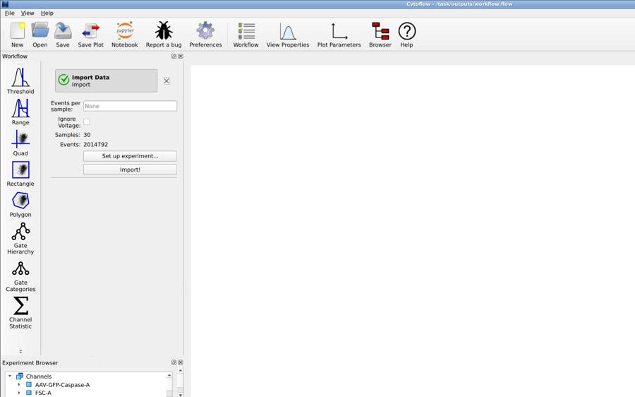
text(await tools.exec_command({cmd:"cu click 48 454\ncu screenshot /tmp/screen.png","max_output_tokens":1000}));
image((await tools.view_image({path:"/tmp/screen.png"})).image_url);
Script completed Wall time 0.2 seconds Output:
{"chunk_id":"7c8073","wall_time_seconds":0.00000422,"exit_code":0,"original_token_count":4,"output":"/tmp/screen.png\n"}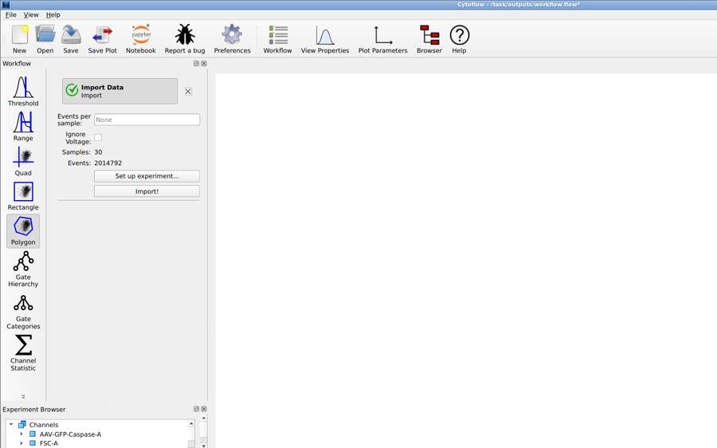
text(await tools.exec_command({cmd:"sleep 1\ncu screenshot /tmp/screen.png","max_output_tokens":1000}));
image((await tools.view_image({path:"/tmp/screen.png"})).image_url);
Script completed Wall time 1.1 seconds Output:
{"chunk_id":"8b7ec8","wall_time_seconds":0.890078177,"exit_code":0,"original_token_count":4,"output":"/tmp/screen.png\n"}
text(await tools.exec_command({cmd:"cu click 264 325\ncu type 'Cells'\ncu click 352 353\ncu screenshot /tmp/screen.png","max_output_tokens":1000}));
image((await tools.view_image({path:"/tmp/screen.png"})).image_url);
Script completed Wall time 0.4 seconds Output:
{"chunk_id":"42e3b9","wall_time_seconds":0.230418531,"exit_code":0,"original_token_count":4,"output":"/tmp/screen.png\n"}
text(await tools.exec_command({cmd:"cu click 225 378\ncu click 355 383\ncu screenshot /tmp/screen.png","max_output_tokens":1000}));
image((await tools.view_image({path:"/tmp/screen.png"})).image_url);
Script completed Wall time 0.3 seconds Output:
{"chunk_id":"511fda","wall_time_seconds":0.099117492,"exit_code":0,"original_token_count":4,"output":"/tmp/screen.png\n"}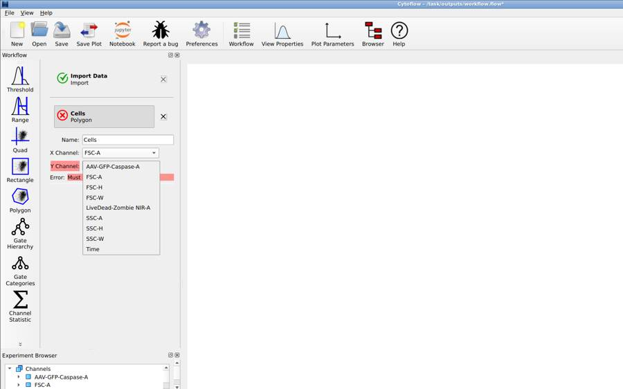
text(await tools.exec_command({cmd:"cu click 225 505\ncu click 655 68\nsleep 1\ncu screenshot /tmp/screen.png","max_output_tokens":1000}));
image((await tools.view_image({path:"/tmp/screen.png"})).image_url);
Script completed Wall time 1.3 seconds Output:
{"chunk_id":"3fa432","wall_time_seconds":1.100218207,"exit_code":0,"original_token_count":4,"output":"/tmp/screen.png\n"}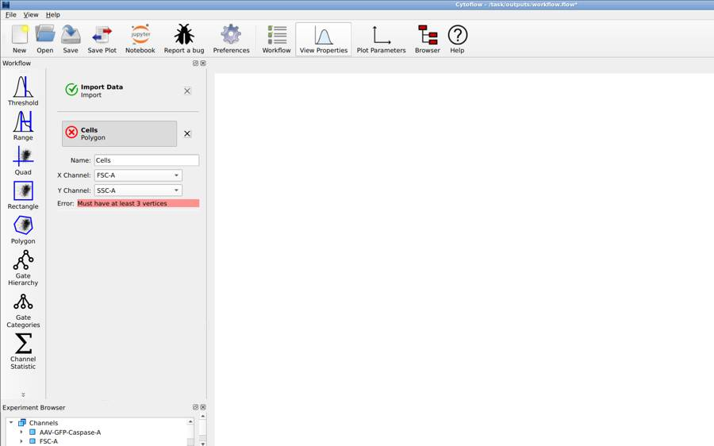
text(await tools.exec_command({cmd:"cu click 61 30\ncu screenshot /tmp/screen.png","max_output_tokens":1000}));
image((await tools.view_image({path:"/tmp/screen.png"})).image_url);
Script completed Wall time 0.2 seconds Output:
{"chunk_id":"1ef4c2","wall_time_seconds":0.037370635,"exit_code":0,"original_token_count":4,"output":"/tmp/screen.png\n"}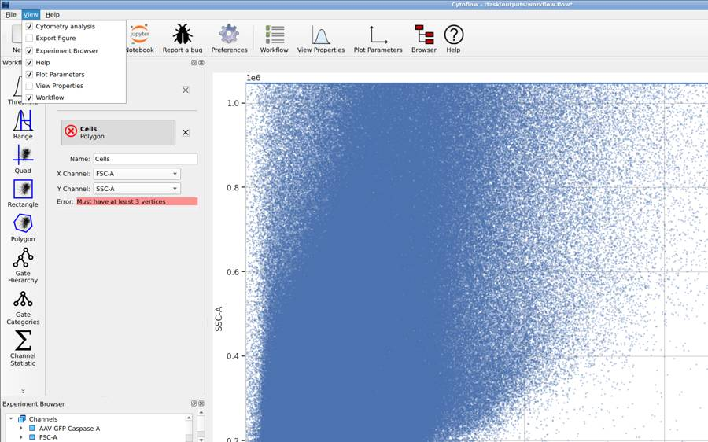
text(await tools.exec_command({cmd:"cu key esc\ncu key alt+F10\ncu click 653 72\nsleep 2\ncu screenshot /tmp/screen.png","max_output_tokens":1000}));
image((await tools.view_image({path:"/tmp/screen.png"})).image_url);
Script completed Wall time 2.2 seconds Output:
{"chunk_id":"db46b1","wall_time_seconds":2.058026908,"exit_code":0,"original_token_count":27,"output":"(symbol) No such key name 'esc'. Ignoring it.\n(symbol) No such key name 'esc'. Ignoring it.\n/tmp/screen.png\n"}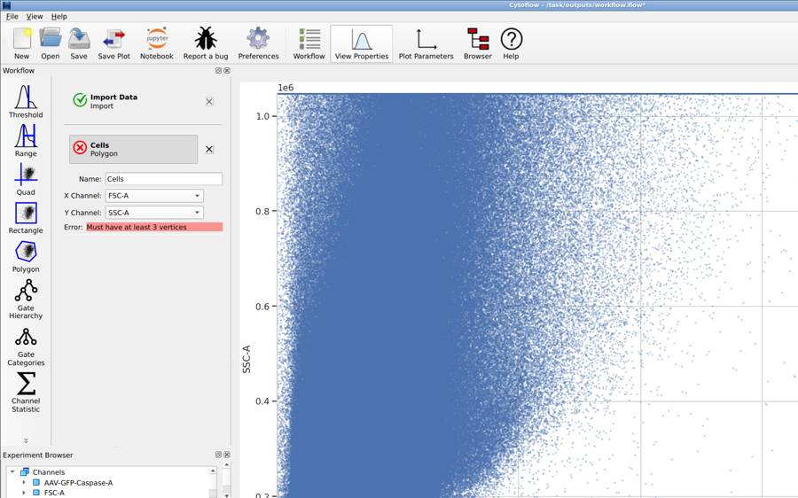
text(await tools.exec_command({cmd:"xwininfo -root -tree | head -35\nxrandr","max_output_tokens":2200}));
Script completed
Wall time 0.0 seconds
Output:
{"chunk_id":"afc07b","wall_time_seconds":0.00000423,"exit_code":0,"original_token_count":439,"output":"\nxwininfo: Window id: 0x21f (the root window) (has no name)\n\n Root window id: 0x21f (the root window) (has no name)\n Parent window id: 0x0 (none)\n 19 children:\n 0xe0003e \"cytoflow\": (\"cytoflow\" \"cytoflow\") 213x170+44+41 +44+41\n 0xe00039 \"cytoflow\": (\"cytoflow\" \"cytoflow\") 179x218+191+372 +191+372\n 0xe00034 \"cytoflow\": (\"cytoflow\" \"cytoflow\") 179x218+191+341 +191+341\n 0xe0002a \"cytoflow\": (\"cytoflow\" \"cytoflow\") 304x168+7+41 +7+41\n 0xe00019 \"Qt Clipboard Requestor Window\": () 3x3+0+0 +0+0\n 0xe00008 \"cytoflow\": () 1x1+0+0 +0+0\n 0xe00004 \"Qt Selection Owner for cytoflow\": () 3x3+0+0 +0+0\n 0xc0000e \"Openbox\": (\"\" (none)) 1x1+-100+-100 +-100+-100\n 0xc00062 (has no name): () 1x1+0+0 +0+0\n 1 child:\n 0xc00063 (has no name): () 1x1+0+0 +1+1\n 0xc00060 (has no name): () 1x1+0+0 +0+0\n 1 child:\n 0xc00061 (has no name): () 1x1+0+0 +1+1\n 0xc0005d (has no name): () 1x1+0+0 +0+0\n 1 child:\n 0xc0005e (has no name): () 1x1+0+0 +1+1\n 0xc00059 (has no name): (\"OPENBOX_FOCUS_CYCLE_POPUP\" \"OPENBOX_FOCUS_CYCLE_POPUP\") 1x1+0+0 +0+0\n 3 children:\n 0xc0005c (has no name): () 1x1+0+0 +1+1\n 0xc0005b (has no name): () 1x1+0+0 +1+1\n 0xc0005a (has no name): () 1x1+0+0 +1+1\n 0xc00056 (has no name): () 1x1+0+0 +0+0\n 2 children:\n 0xc00058 (has no name): () 1x1+0+0 +1+1\n 0xc00057 (has no name): () 1x1+0+0 +1+1\n 0xc00055 (has no name): () 1x1+0+0 +0+0\n 0xc00054 (has no name): () 1x1+0+0 +0+0\n 0xc00053 (has no name): () 1x1+0+0 +0+0\nScreen 0: minimum 1 x 1, current 1440 x 900, maximum 1440 x 900\nscreen connected 1440x900+0+0 0mm x 0mm\n 1440x900 0.00* \n"}text(await tools.exec_command({cmd:"xwininfo -root -tree | tail -30\ncommand -v wmctrl\ncu click 600 10 double\nsleep 1\ncu screenshot /tmp/screen.png","max_output_tokens":2000}));
image((await tools.view_image({path:"/tmp/screen.png"})).image_url);
Script completed Wall time 1.3 seconds Output:
{"chunk_id":"bac654","wall_time_seconds":1.115043111,"exit_code":0,"original_token_count":363,"output":" 0xc00070 (has no name): () 1x25+0+1 +0+1\n 0xc0006f (has no name): () 2082x18+1+1 +1+1\n 12 children:\n 0xc00083 (has no name): () 12x12+2034+3 +2035+4\n 0xc00082 (has no name): () 14x14+4+2 +5+3\n 0xc00081 (has no name): () 12x12+0+0 +1+1\n 0xc00080 (has no name): () 12x12+0+0 +1+1\n 0xc0007f (has no name): () 12x12+2066+3 +2067+4\n 0xc0007e (has no name): () 12x12+2050+3 +2051+4\n 0xc0007d (has no name): () 1978x14+52+2 +53+3\n 0xc0007a (has no name): () 4x18+2078+0 +2079+1\n 0xc00079 (has no name): () 25x3+2057+0 +2058+1\n 0xc00078 (has no name): () 4x18+0+0 +1+1\n 0xc00077 (has no name): () 25x3+0+0 +1+1\n 0xc00076 (has no name): () 2032x3+25+0 +26+1\n 0xc0006a (has no name): () 1x1+0+0 +0+0\n 2 children:\n 0xc0006c (has no name): () 1x1+0+0 +0+0\n 0xc0006b (has no name): () 1x1+0+0 +0+0\n 0xc00069 (has no name): () 1x1+0+0 +0+0\n 1 child:\n 0xc0006e (has no name): () 1x1+0+0 +0+0\n 0xc00068 (has no name): () 1x1+0+0 +0+0\n 0xc00067 (has no name): () 1x1+0+0 +0+0\n 1 child:\n 0xc0006d (has no name): () 1x1+0+0 +0+0\n 0xc00065 (has no name): () 2082x1171+1+20 +1+20\n 1 child:\n 0xc00066 (has no name): () 2082x1171+0+0 +1+20\n\n/tmp/screen.png\n"}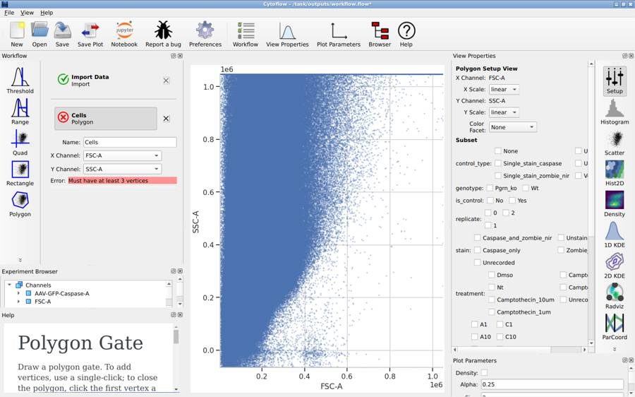
text(await tools.exec_command({cmd:"cu click 409 714\ncu click 409 613\ncu click 1166 202\ncu screenshot /tmp/screen.png","max_output_tokens":1000}));
image((await tools.view_image({path:"/tmp/screen.png"})).image_url);
Script completed Wall time 0.4 seconds Output:
{"chunk_id":"b3538a","wall_time_seconds":0.221394704,"exit_code":0,"original_token_count":4,"output":"/tmp/screen.png\n"}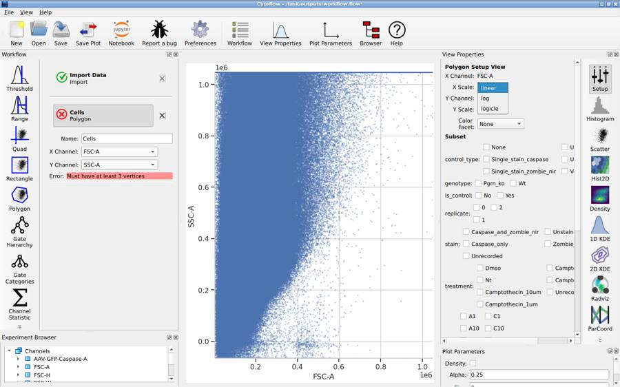
text(await tools.exec_command({cmd:"cu click 1130 229\ncu click 1167 253\ncu click 1131 280\ncu click 1099 844\ncu click 408 784\nsleep 2\ncu screenshot /tmp/screen.png","max_output_tokens":1000}));
image((await tools.view_image({path:"/tmp/screen.png"})).image_url);
Script completed Wall time 2.6 seconds Output:
{"chunk_id":"5907d2","wall_time_seconds":2.436183623,"exit_code":0,"original_token_count":4,"output":"/tmp/screen.png\n"}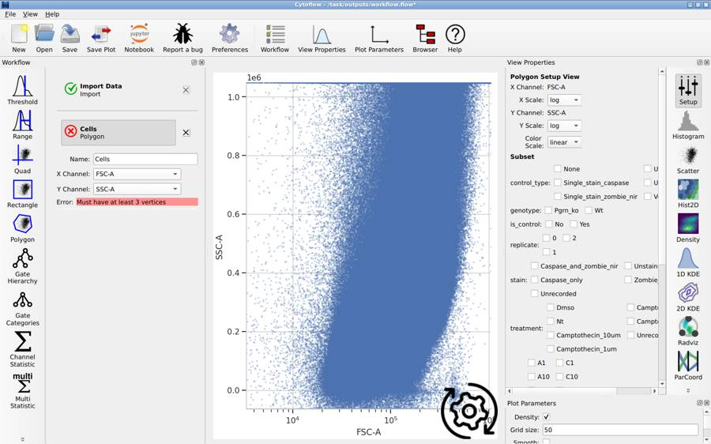
text(await tools.exec_command({cmd:"sleep 3\ncu screenshot /tmp/screen.png","max_output_tokens":1000}));
image((await tools.view_image({path:"/tmp/screen.png"})).image_url);
Script completed Wall time 3.1 seconds Output:
{"chunk_id":"4fbacd","wall_time_seconds":2.899314715,"exit_code":0,"original_token_count":4,"output":"/tmp/screen.png\n"}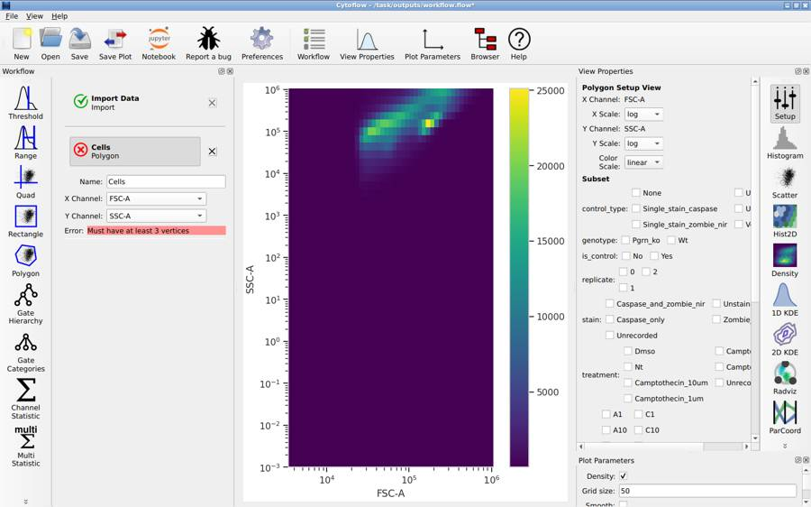
text(await tools.exec_command({cmd:"cu click 1166 202\ncu key Home\ncu key Return\ncu click 1165 254\ncu key Home\ncu key Return\nsleep 2\ncu screenshot /tmp/screen.png","max_output_tokens":1000}));
image((await tools.view_image({path:"/tmp/screen.png"})).image_url);
Script completed Wall time 2.3 seconds Output:
{"chunk_id":"772146","wall_time_seconds":2.170611635,"exit_code":0,"original_token_count":4,"output":"/tmp/screen.png\n"}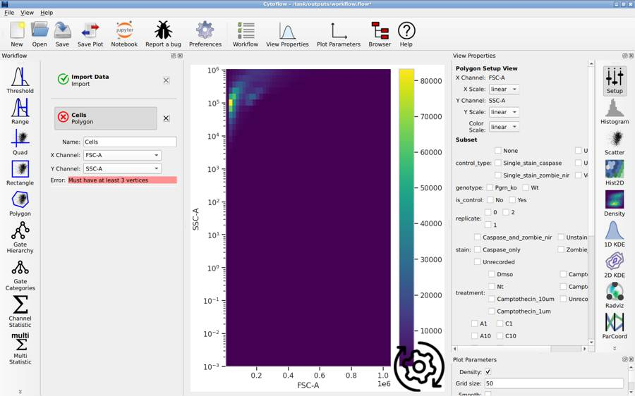
text(await tools.exec_command({cmd:"sleep 2\ncu screenshot /tmp/screen.png","max_output_tokens":1000}));
image((await tools.view_image({path:"/tmp/screen.png"})).image_url);
Script completed Wall time 2.1 seconds Output:
{"chunk_id":"1868c8","wall_time_seconds":1.899257829,"exit_code":0,"original_token_count":4,"output":"/tmp/screen.png\n"}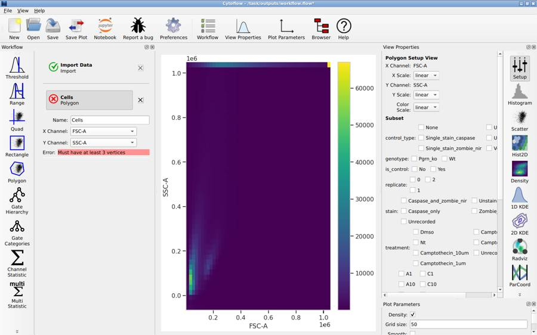
text(await tools.exec_command({cmd:"cu click 1167 288\ncu key Down\ncu key Return\ncu drag 1189 802 1189 598\ncu screenshot /tmp/screen.png","max_output_tokens":1000}));
image((await tools.view_image({path:"/tmp/screen.png"})).image_url);
Script completed Wall time 0.2 seconds Output:
{"chunk_id":"9fbfd2","wall_time_seconds":0.065197265,"exit_code":0,"original_token_count":4,"output":"/tmp/screen.png\n"}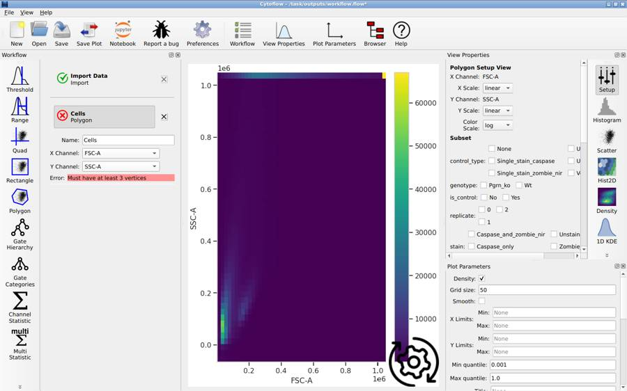
text(await tools.exec_command({cmd:"cu click 1236 718\ncu key ctrl+a\ncu type '0'\ncu click 1243 749\ncu key ctrl+a\ncu type '600000'\ncu click 1238 780\ncu key ctrl+a\ncu type '0'\ncu click 1238 809\ncu key ctrl+a\ncu type '1000000'\ncu key Tab\nsleep 3\ncu screenshot /tmp/screen.png","max_output_tokens":1000}));
image((await tools.view_image({path:"/tmp/screen.png"})).image_url);
Script completed Wall time 4.0 seconds Output:
{"chunk_id":"cf9c50","wall_time_seconds":3.836696304,"exit_code":0,"original_token_count":4,"output":"/tmp/screen.png\n"}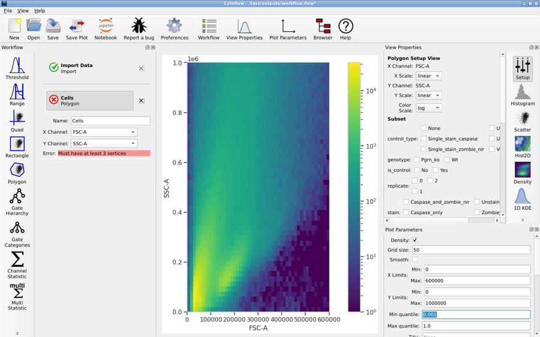
text(await tools.exec_command({cmd:"cu scroll 1242 539 down 5\ncu screenshot /tmp/screen.png","max_output_tokens":1000}));
image((await tools.view_image({path:"/tmp/screen.png"})).image_url);
Script completed Wall time 0.6 seconds Output:
{"chunk_id":"1cabe2","wall_time_seconds":0.403336445,"exit_code":0,"original_token_count":4,"output":"/tmp/screen.png\n"}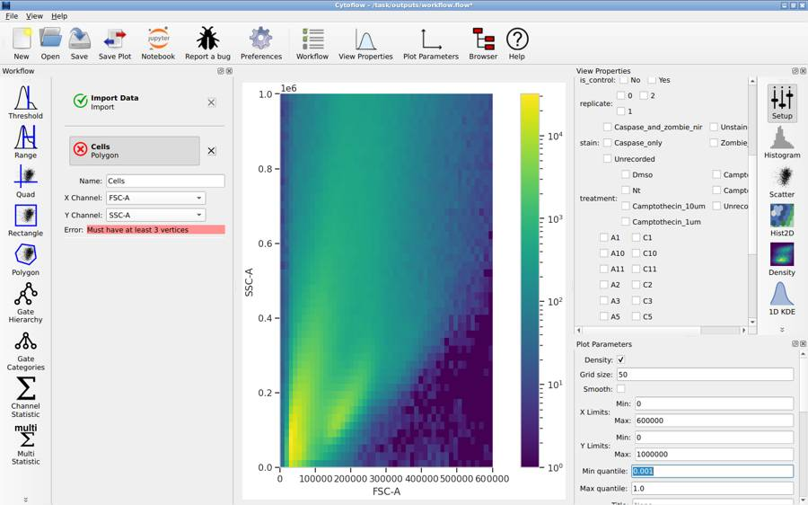
text(await tools.exec_command({cmd:"cu scroll 1243 536 down 3\ncu screenshot /tmp/screen.png","max_output_tokens":1000}));
image((await tools.view_image({path:"/tmp/screen.png"})).image_url);
Script completed Wall time 0.4 seconds Output:
{"chunk_id":"5b8900","wall_time_seconds":0.204402872,"exit_code":0,"original_token_count":4,"output":"/tmp/screen.png\n"}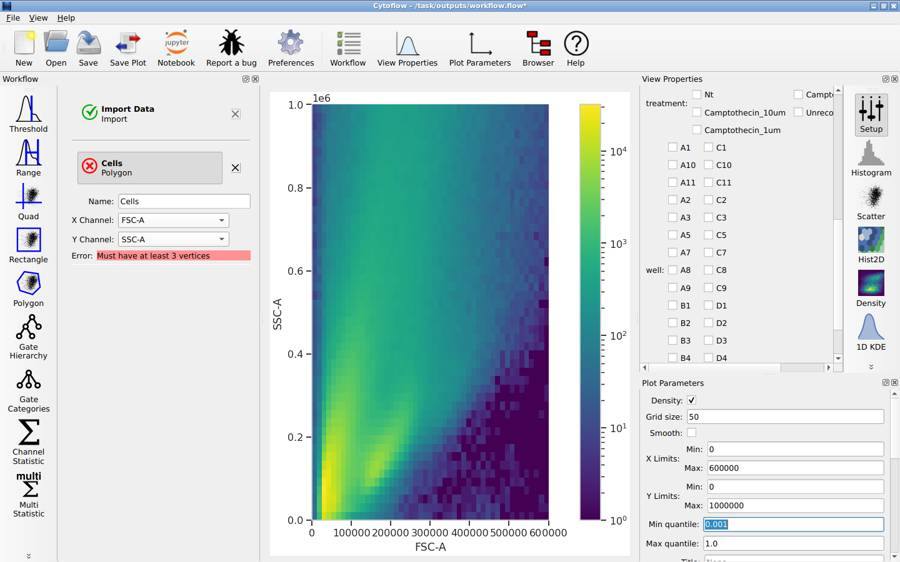
text(await tools.exec_command({cmd:"cu click 1075 403\nsleep 2\ncu screenshot /tmp/screen.png","max_output_tokens":1000}));
image((await tools.view_image({path:"/tmp/screen.png"})).image_url);
Script completed Wall time 2.2 seconds Output:
{"chunk_id":"0514ec","wall_time_seconds":2.006183138,"exit_code":0,"original_token_count":4,"output":"/tmp/screen.png\n"}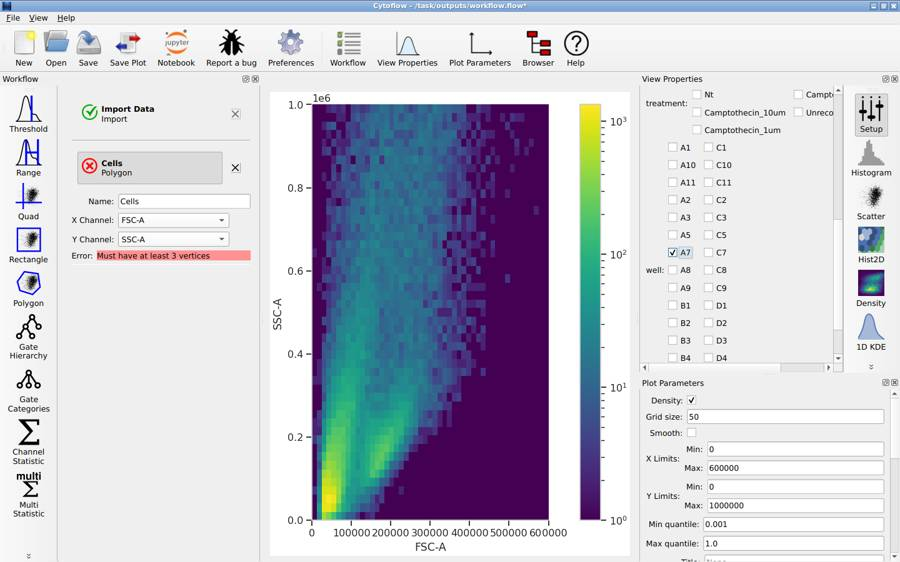
text(await tools.exec_command({cmd:"cu click 1075 403\nsleep 2\ncu click 556 733\ncu click 572 786\ncu click 616 793\ncu click 676 726\ncu click 739 600\ncu click 764 433\ncu click 745 267\ncu click 689 187\ncu click 625 233\ncu click 581 400\ncu click 556 600\ncu click 556 733 double\nsleep 2\ncu key ctrl+s\ncu screenshot /tmp/screen.png","max_output_tokens":1000}));
image((await tools.view_image({path:"/tmp/screen.png"})).image_url);
Script completed Wall time 5.6 seconds Output:
{"chunk_id":"f24826","wall_time_seconds":5.396298804,"exit_code":0,"original_token_count":4,"output":"/tmp/screen.png\n"}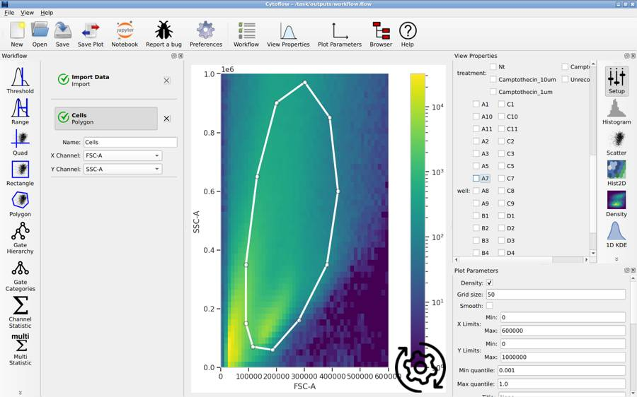
text(await tools.exec_command({cmd:"cu click 46 453\nsleep 1\ncu screenshot /tmp/screen.png","max_output_tokens":1000}));
image((await tools.view_image({path:"/tmp/screen.png"})).image_url);
Script completed Wall time 1.2 seconds Output:
{"chunk_id":"51be9b","wall_time_seconds":1.002224734,"exit_code":0,"original_token_count":4,"output":"/tmp/screen.png\n"}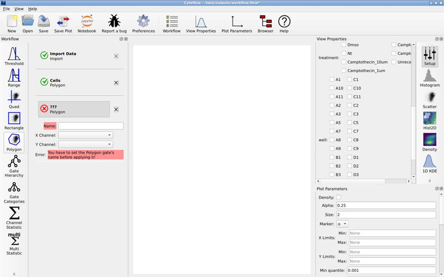
text(await tools.exec_command({cmd:"cu click 273 409\ncu type 'Single_Cells'\ncu click 353 440\ncu key Home\ncu key Down\ncu key Down\ncu key Down\ncu key Down\ncu key Down\ncu key Down\ncu key Return\ncu click 353 469\ncu key Home\ncu key Down\ncu key Down\ncu key Down\ncu key Down\ncu key Down\ncu key Return\ncu scroll 1243 318 up 20\nsleep 1\ncu screenshot /tmp/screen.png","max_output_tokens":1000}));
image((await tools.view_image({path:"/tmp/screen.png"})).image_url);
Script completed Wall time 3.9 seconds Output:
{"chunk_id":"b3c491","wall_time_seconds":3.754628495,"exit_code":0,"original_token_count":4,"output":"/tmp/screen.png\n"}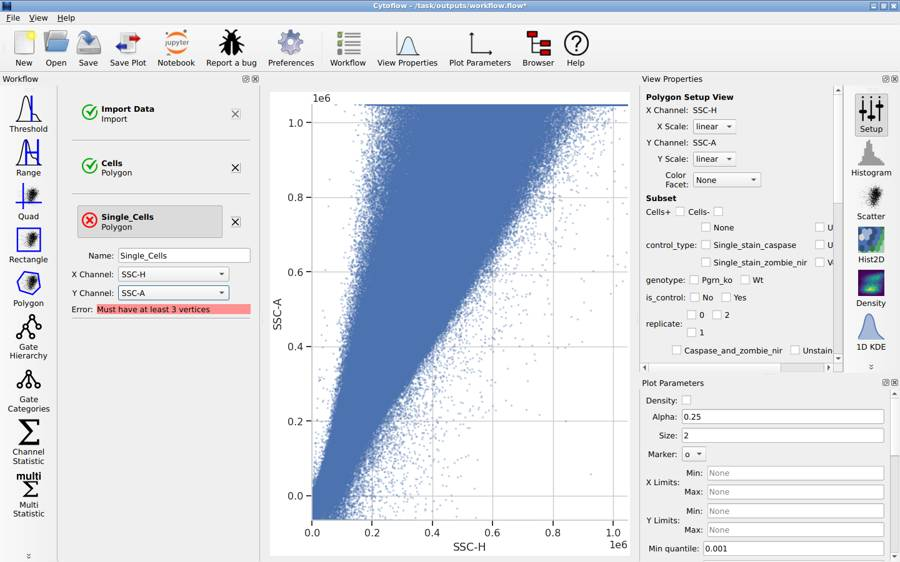
text(await tools.exec_command({cmd:"cu click 1088 338\ncu click 1098 641\nsleep 3\ncu screenshot /tmp/screen.png","max_output_tokens":1000}));
image((await tools.view_image({path:"/tmp/screen.png"})).image_url);
Script completed Wall time 3.3 seconds Output:
{"chunk_id":"99a7cb","wall_time_seconds":3.110504093,"exit_code":0,"original_token_count":4,"output":"/tmp/screen.png\n"}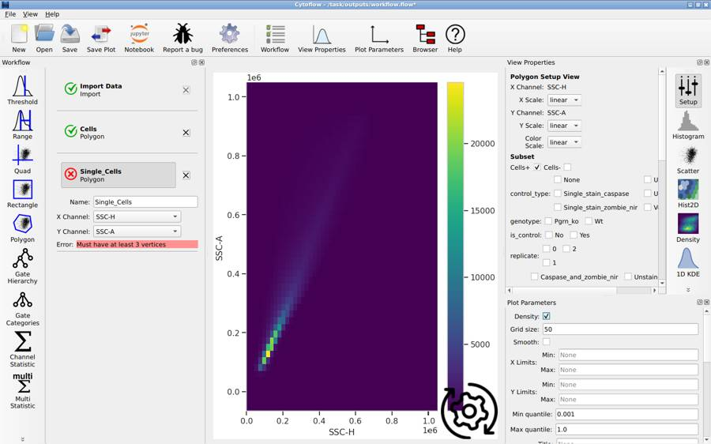
text(await tools.exec_command({cmd:"cu click 1164 288\ncu key Down\ncu key Return\ncu click 1224 718\ncu key ctrl+a\ncu type '0'\ncu click 1224 747\ncu key ctrl+a\ncu type '800000'\ncu click 1224 778\ncu key ctrl+a\ncu type '0'\ncu click 1224 808\ncu key ctrl+a\ncu type '1000000'\ncu key Tab\nsleep 2\ncu screenshot /tmp/screen.png","max_output_tokens":1000}));
image((await tools.view_image({path:"/tmp/screen.png"})).image_url);
Script completed Wall time 3.1 seconds Output:
{"chunk_id":"30ec99","wall_time_seconds":2.972890686,"exit_code":0,"original_token_count":4,"output":"/tmp/screen.png\n"}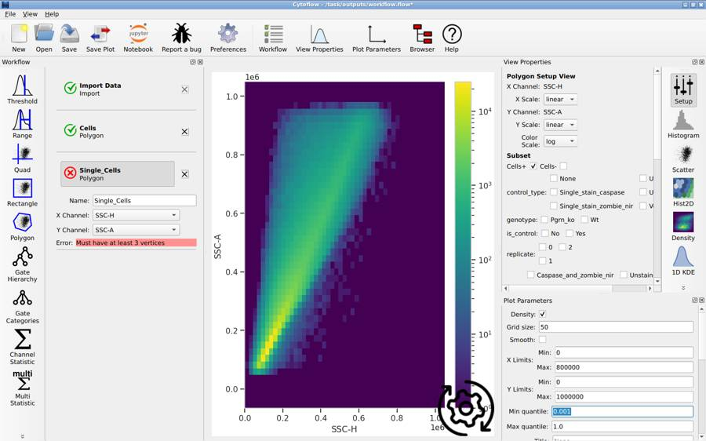
text(await tools.exec_command({cmd:"sleep 2\ncu screenshot /tmp/screen.png","max_output_tokens":1000}));
image((await tools.view_image({path:"/tmp/screen.png"})).image_url);
Script completed Wall time 2.1 seconds Output:
{"chunk_id":"f93997","wall_time_seconds":1.8981812489999998,"exit_code":0,"original_token_count":4,"output":"/tmp/screen.png\n"}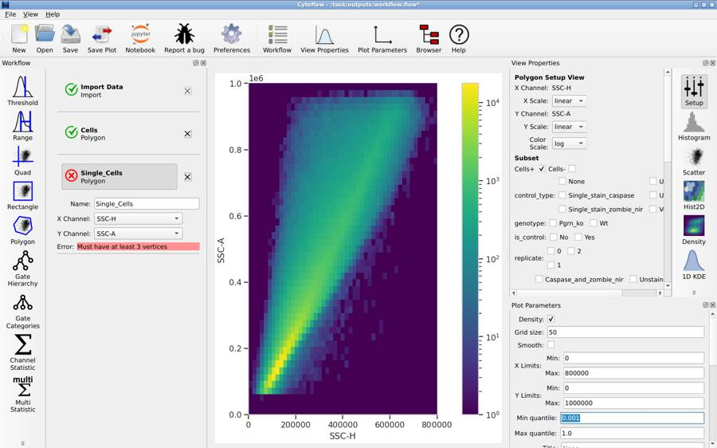
text(await tools.exec_command({cmd:"cu click 523 780\ncu click 551 780\ncu click 847 187\ncu click 760 187\ncu click 523 780 double\nsleep 2\ncu key ctrl+s\ncu click 46 246\nsleep 1\ncu screenshot /tmp/screen.png","max_output_tokens":1000}));
image((await tools.view_image({path:"/tmp/screen.png"})).image_url);
Script completed Wall time 3.8 seconds Output:
{"chunk_id":"88166a","wall_time_seconds":3.657850372,"exit_code":0,"original_token_count":4,"output":"/tmp/screen.png\n"}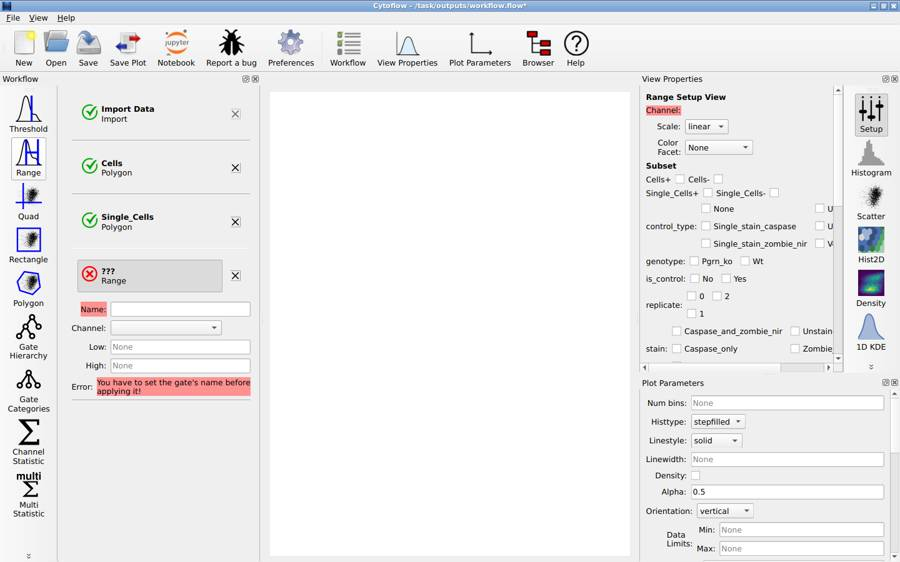
text(await tools.exec_command({cmd:"cu click 276 495\ncu type 'Live'\ncu click 341 524\ncu key Home\ncu key Down\ncu key Down\ncu key Down\ncu key Down\ncu key Return\ncu click 1154 202\ncu key End\ncu key Return\ncu click 1087 286\ncu click 1132 307\ncu click 1192 235\ncu screenshot /tmp/screen.png","max_output_tokens":1000}));
image((await tools.view_image({path:"/tmp/screen.png"})).image_url);
Script completed Wall time 0.9 seconds Output:
{"chunk_id":"42f103","wall_time_seconds":0.750182362,"exit_code":0,"original_token_count":4,"output":"/tmp/screen.png\n"}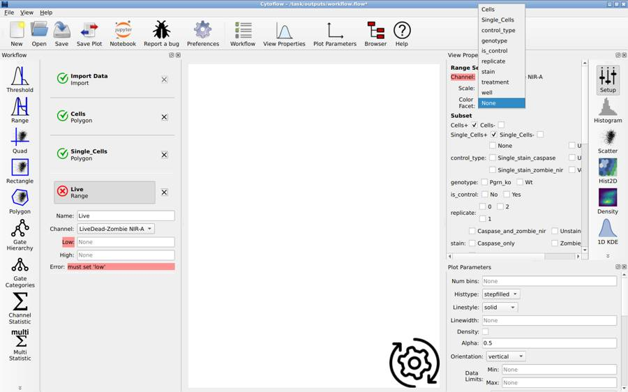
text(await tools.exec_command({cmd:"cu click 1123 164\ncu click 1082 556\ncu click 1271 530\ncu click 1112 762\nsleep 3\ncu screenshot /tmp/screen.png","max_output_tokens":1000}));
image((await tools.view_image({path:"/tmp/screen.png"})).image_url);
Script completed Wall time 3.5 seconds Output:
{"chunk_id":"c9c9ef","wall_time_seconds":3.318951943,"exit_code":0,"original_token_count":4,"output":"/tmp/screen.png\n"}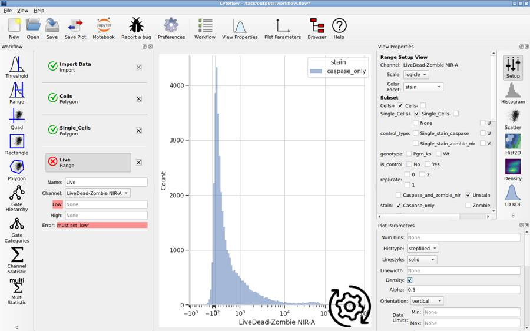
text(await tools.exec_command({cmd:"sleep 2\ncu screenshot /tmp/screen.png","max_output_tokens":1000}));
image((await tools.view_image({path:"/tmp/screen.png"})).image_url);
Script completed Wall time 2.1 seconds Output:
{"chunk_id":"cc6c53","wall_time_seconds":1.89965534,"exit_code":0,"original_token_count":4,"output":"/tmp/screen.png\n"}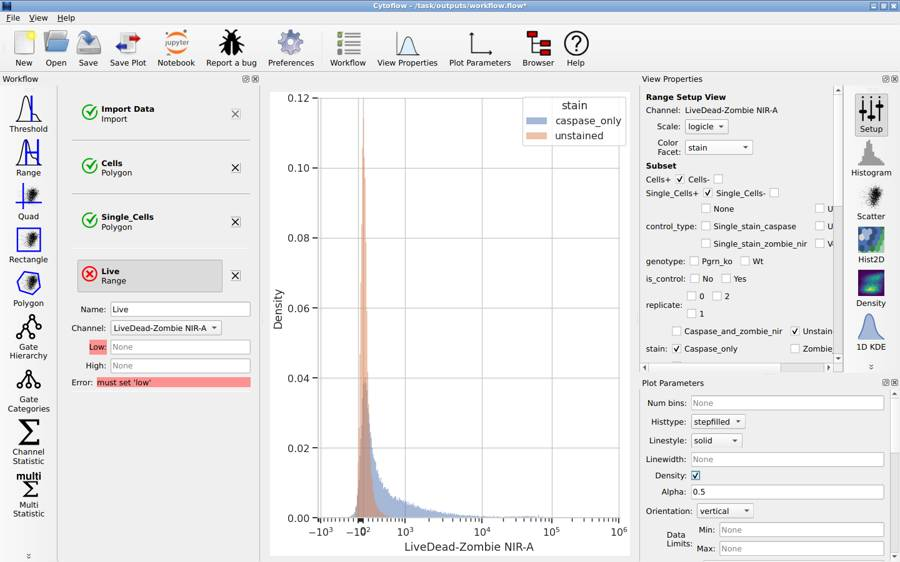
text(await tools.exec_command({cmd:"cu click 1194 235\ncu key End\ncu key Up\ncu key Return\nsleep 2\ncu screenshot /tmp/screen.png","max_output_tokens":1000}));
image((await tools.view_image({path:"/tmp/screen.png"})).image_url);
Script completed Wall time 2.2 seconds Output:
{"chunk_id":"dc8715","wall_time_seconds":2.048717612,"exit_code":0,"original_token_count":4,"output":"/tmp/screen.png\n"}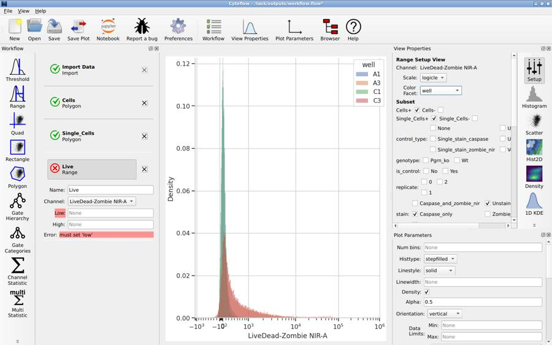
text(await tools.exec_command({cmd:"cu click 1082 558\ncu click 1271 530\ncu click 1082 530\ncu click 1194 235\ncu key Home\ncu key Down\ncu key Down\ncu key Down\ncu key Return\nsleep 2\ncu screenshot /tmp/screen.png","max_output_tokens":1000}));
image((await tools.view_image({path:"/tmp/screen.png"})).image_url);
Script completed Wall time 2.6 seconds Output:
{"chunk_id":"e23e56","wall_time_seconds":2.394040679,"exit_code":0,"original_token_count":4,"output":"/tmp/screen.png\n"}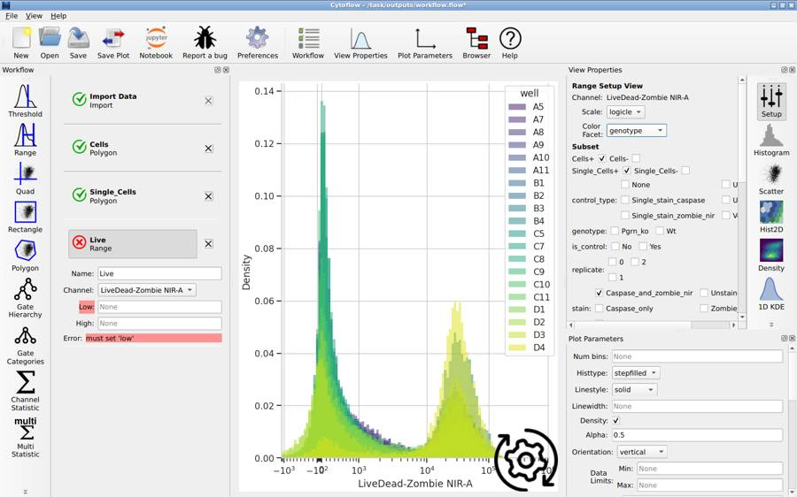
text(await tools.exec_command({cmd:"cu click 273 555\ncu key ctrl+a\ncu type '-1000000'\ncu click 273 584\ncu key ctrl+a\ncu type '5000'\ncu key Tab\ncu click 1082 530\nsleep 2\ncu key ctrl+s\ncu click 46 174\nsleep 1\ncu screenshot /tmp/screen.png","max_output_tokens":1000}));
image((await tools.view_image({path:"/tmp/screen.png"})).image_url);
Script completed Wall time 3.9 seconds Output:
{"chunk_id":"16d24a","wall_time_seconds":3.734450823,"exit_code":0,"original_token_count":4,"output":"/tmp/screen.png\n"}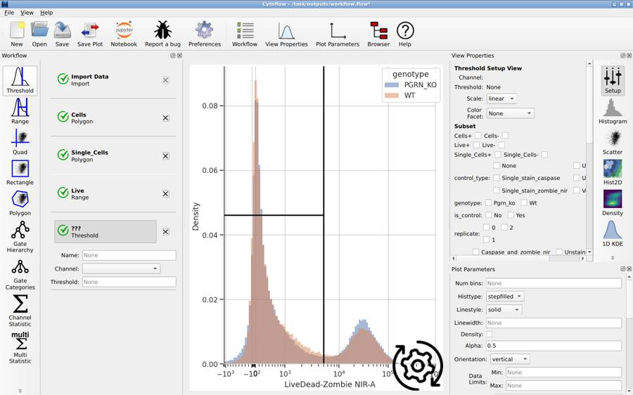
text(await tools.exec_command({cmd:"cu click 272 582\ncu key ctrl+a\ncu type 'Caspase_pos'\ncu click 352 612\ncu key Home\ncu key Return\ncu click 1164 225\ncu key End\ncu key Return\ncu click 1088 308\ncu click 1083 330\ncu click 1132 352\ncu click 1203 258\ncu screenshot /tmp/screen.png","max_output_tokens":1000}));
image((await tools.view_image({path:"/tmp/screen.png"})).image_url);
Script completed Wall time 1.2 seconds Output:
{"chunk_id":"18faac","wall_time_seconds":0.998205976,"exit_code":0,"original_token_count":4,"output":"/tmp/screen.png\n"}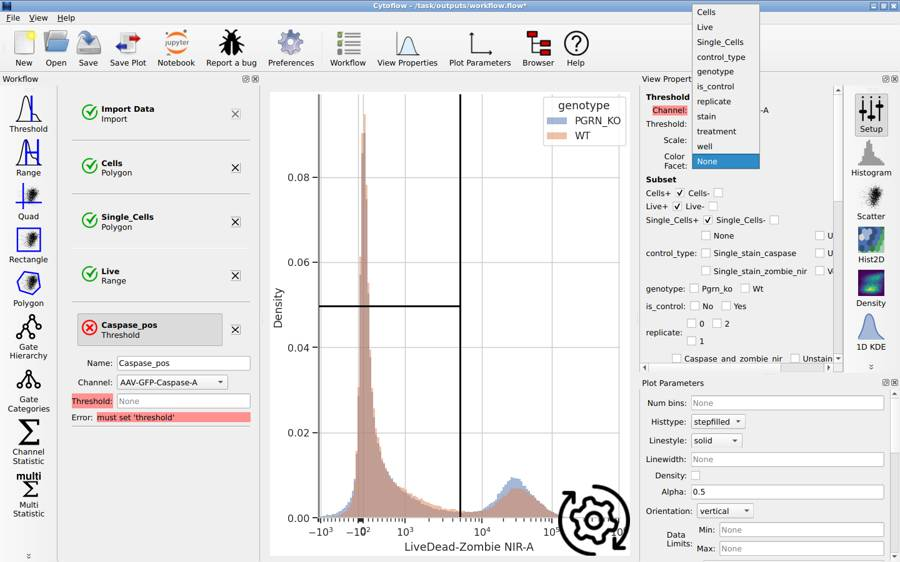
text(await tools.exec_command({cmd:"cu click 1127 233\ncu click 1271 575\ncu scroll 1233 540 down 2\ncu screenshot /tmp/screen.png","max_output_tokens":1000}));
image((await tools.view_image({path:"/tmp/screen.png"})).image_url);
Script completed Wall time 0.5 seconds Output:
{"chunk_id":"d0a700","wall_time_seconds":0.31341673,"exit_code":0,"original_token_count":4,"output":"/tmp/screen.png\n"}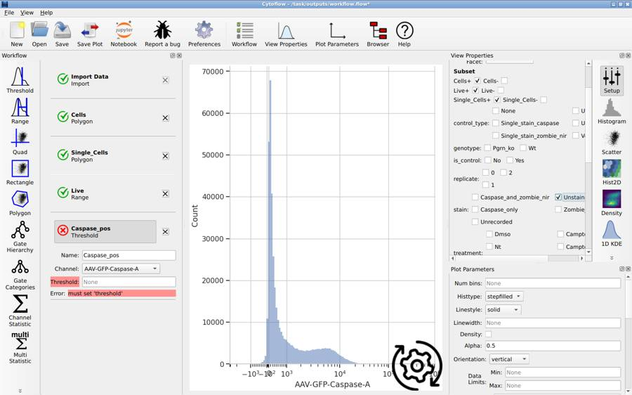
text(await tools.exec_command({cmd:"cu click 1272 477\ncu click 1114 762\nsleep 3\ncu screenshot /tmp/screen.png","max_output_tokens":1000}));
image((await tools.view_image({path:"/tmp/screen.png"})).image_url);
Script completed Wall time 3.3 seconds Output:
{"chunk_id":"918f02","wall_time_seconds":3.107106525,"exit_code":0,"original_token_count":4,"output":"/tmp/screen.png\n"}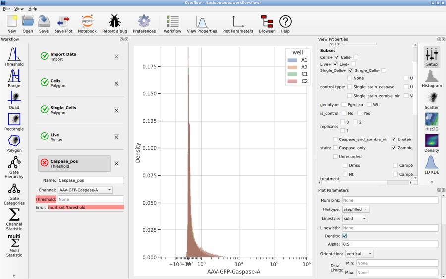
text(await tools.exec_command({cmd:"cu click 1272 449\ncu click 1272 477\ncu click 1083 449\ncu scroll 1239 292 up 20\ncu click 1203 258\ncu key Home\ncu key Down\ncu key Down\ncu key Down\ncu key Down\ncu key Return\nsleep 3\ncu screenshot /tmp/screen.png","max_output_tokens":1000}));
image((await tools.view_image({path:"/tmp/screen.png"})).image_url);
Script completed Wall time 5.6 seconds Output:
{"chunk_id":"3b04e7","wall_time_seconds":5.412475818,"exit_code":0,"original_token_count":4,"output":"/tmp/screen.png\n"}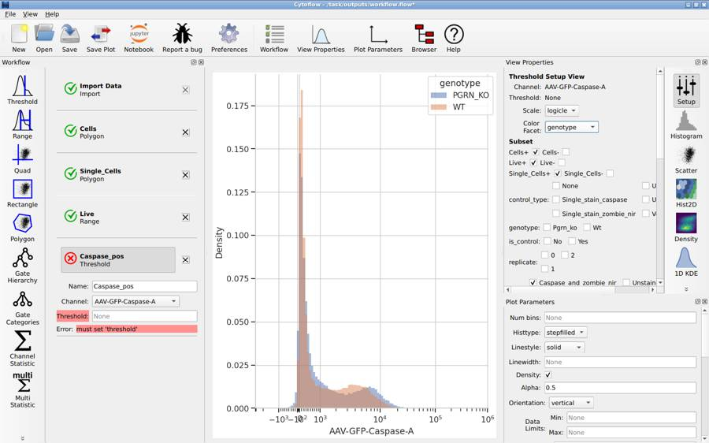
text(await tools.exec_command({cmd:"cu click 278 640\ncu key ctrl+a\ncu type '3000'\ncu key Tab\ncu click 1082 574\nsleep 2\ncu key ctrl+s\ncu click 46 690\nsleep 1\ncu screenshot /tmp/screen.png","max_output_tokens":1000}));
image((await tools.view_image({path:"/tmp/screen.png"})).image_url);
Script completed Wall time 3.6 seconds Output:
{"chunk_id":"dcbeca","wall_time_seconds":3.384021639,"exit_code":0,"original_token_count":4,"output":"/tmp/screen.png\n"}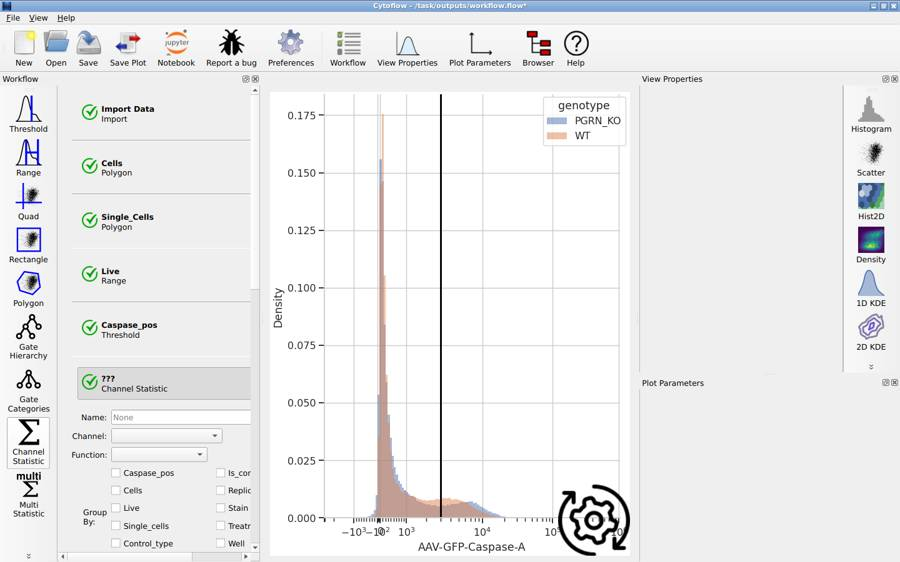
text(await tools.exec_command({cmd:"cu click 267 668\ncu key ctrl+a\ncu type 'Gate_counts'\ncu click 344 698\ncu key Home\ncu key Down\ncu key Return\ncu click 319 728\ncu screenshot /tmp/screen.png","max_output_tokens":1000}));
image((await tools.view_image({path:"/tmp/screen.png"})).image_url);
Script completed Wall time 0.7 seconds Output:
{"chunk_id":"4ef592","wall_time_seconds":0.562196034,"exit_code":0,"original_token_count":4,"output":"/tmp/screen.png\n"}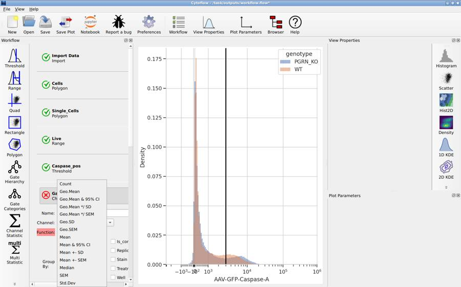
text(await tools.exec_command({cmd:"cu click 211 575\ncu click 185 757\ncu click 185 785\ncu click 185 813\ncu click 185 840\ncu click 353 869\ncu scroll 1394 542 down 5\nsleep 3\ncu screenshot /tmp/screen.png","max_output_tokens":1000}));
image((await tools.view_image({path:"/tmp/screen.png"})).image_url);
Script completed Wall time 4.2 seconds Output:
{"chunk_id":"33d1b3","wall_time_seconds":4.03023584,"exit_code":0,"original_token_count":4,"output":"/tmp/screen.png\n"}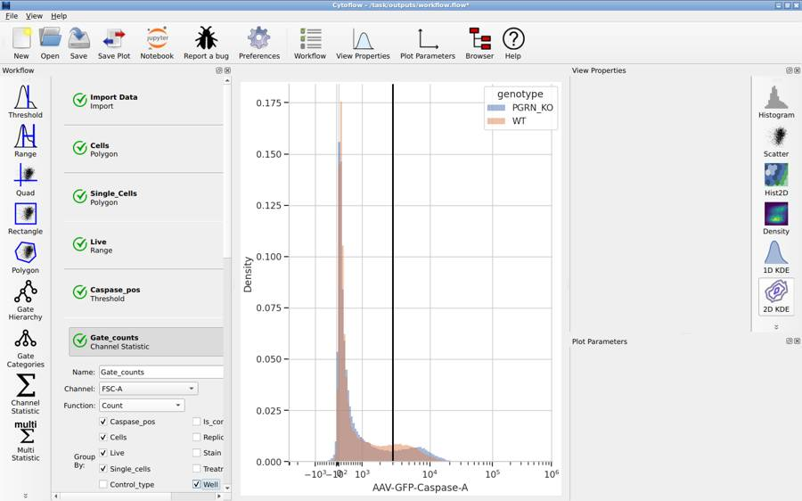
text(await tools.exec_command({cmd:"cu click 1394 586\ncu click 1394 586\ncu click 1394 586\ncu click 1394 586\ncu click 1394 586\ncu screenshot /tmp/screen.png","max_output_tokens":1000}));
image((await tools.view_image({path:"/tmp/screen.png"})).image_url);
Script completed Wall time 0.6 seconds Output:
{"chunk_id":"7d253a","wall_time_seconds":0.4156848,"exit_code":0,"original_token_count":4,"output":"/tmp/screen.png\n"}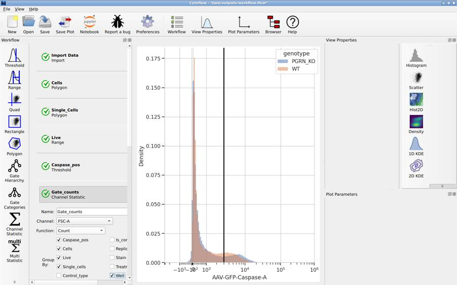
text(await tools.exec_command({cmd:"cu click 1430 613\ncu screenshot /tmp/screen.png","max_output_tokens":1000}));
image((await tools.view_image({path:"/tmp/screen.png"})).image_url);
Script completed Wall time 0.2 seconds Output:
{"chunk_id":"febbaa","wall_time_seconds":0.00164232,"exit_code":0,"original_token_count":4,"output":"/tmp/screen.png\n"}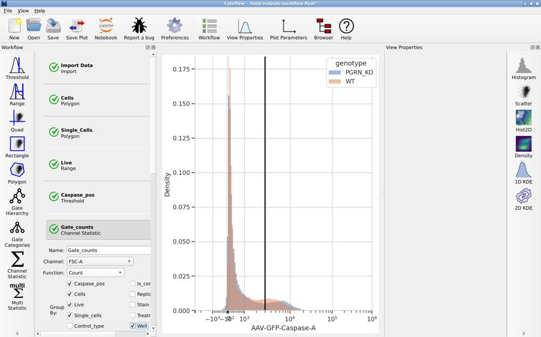
text(await tools.exec_command({cmd:"cu click 1394 890\ncu screenshot /tmp/screen.png","max_output_tokens":1000}));
image((await tools.view_image({path:"/tmp/screen.png"})).image_url);
Script completed Wall time 0.2 seconds Output:
{"chunk_id":"796b5b","wall_time_seconds":0.000516239,"exit_code":0,"original_token_count":4,"output":"/tmp/screen.png\n"}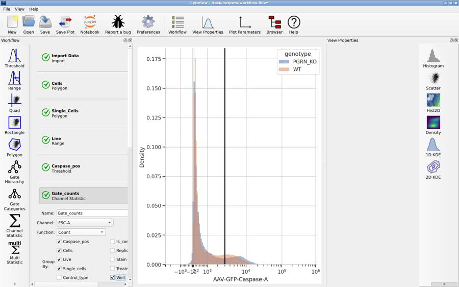
text(await tools.exec_command({cmd:"cu move 1391 889\nsleep 2\ncu screenshot /tmp/screen.png","max_output_tokens":1000}));
image((await tools.view_image({path:"/tmp/screen.png"})).image_url);
Script completed Wall time 2.1 seconds Output:
{"chunk_id":"1b4c95","wall_time_seconds":1.8999878190000001,"exit_code":0,"original_token_count":4,"output":"/tmp/screen.png\n"}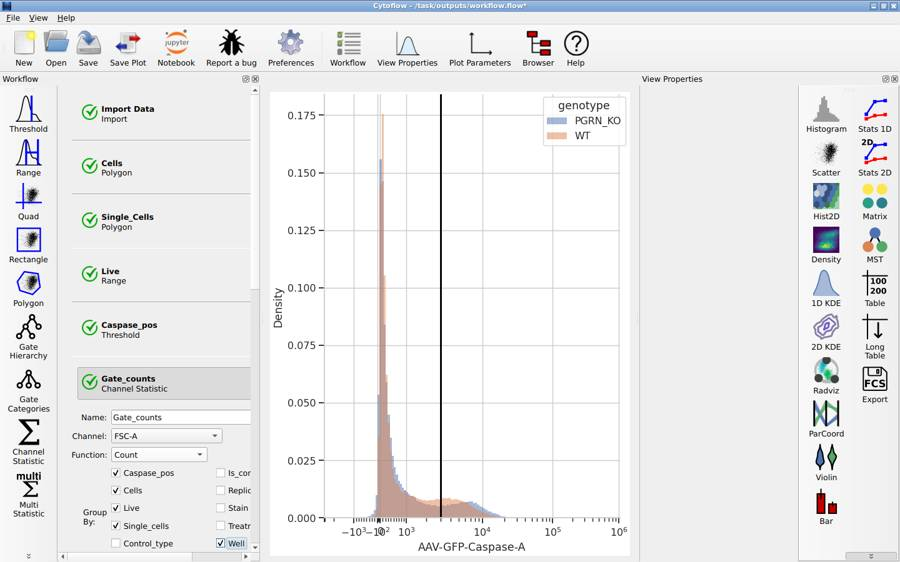
text(await tools.exec_command({cmd:"cu click 1400 524\nsleep 1\ncu screenshot /tmp/screen.png","max_output_tokens":1000}));
image((await tools.view_image({path:"/tmp/screen.png"})).image_url);
Script completed Wall time 1.2 seconds Output:
{"chunk_id":"cced1f","wall_time_seconds":1.001371325,"exit_code":0,"original_token_count":4,"output":"/tmp/screen.png\n"}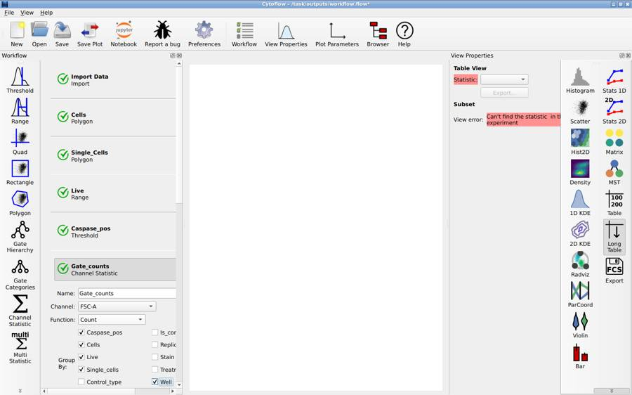
text(await tools.exec_command({cmd:"cu click 1190 180\ncu key Home\ncu key Return\nsleep 2\ncu screenshot /tmp/screen.png","max_output_tokens":1000}));
image((await tools.view_image({path:"/tmp/screen.png"})).image_url);
Script completed Wall time 2.2 seconds Output:
{"chunk_id":"7f0b91","wall_time_seconds":2.036458217,"exit_code":0,"original_token_count":4,"output":"/tmp/screen.png\n"}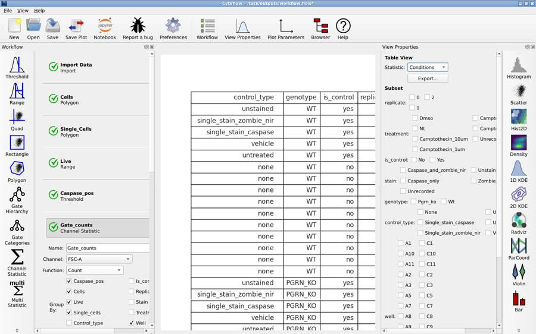
text(await tools.exec_command({cmd:"cu click 1192 182\ncu screenshot /tmp/screen.png","max_output_tokens":1000}));
image((await tools.view_image({path:"/tmp/screen.png"})).image_url);
Script completed Wall time 0.2 seconds Output:
{"chunk_id":"2665b4","wall_time_seconds":0.005251218,"exit_code":0,"original_token_count":4,"output":"/tmp/screen.png\n"}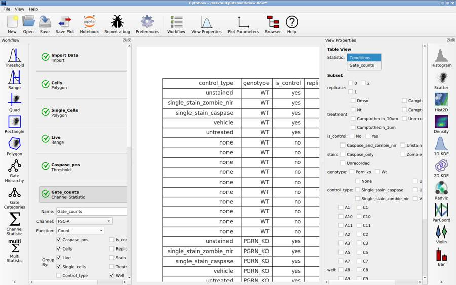
text(await tools.exec_command({cmd:"cu click 1147 205\nsleep 2\ncu click 1148 209\ncu screenshot /tmp/screen.png","max_output_tokens":1000}));
image((await tools.view_image({path:"/tmp/screen.png"})).image_url);
Script completed Wall time 2.3 seconds Output:
{"chunk_id":"7c9133","wall_time_seconds":2.110533658,"exit_code":0,"original_token_count":4,"output":"/tmp/screen.png\n"}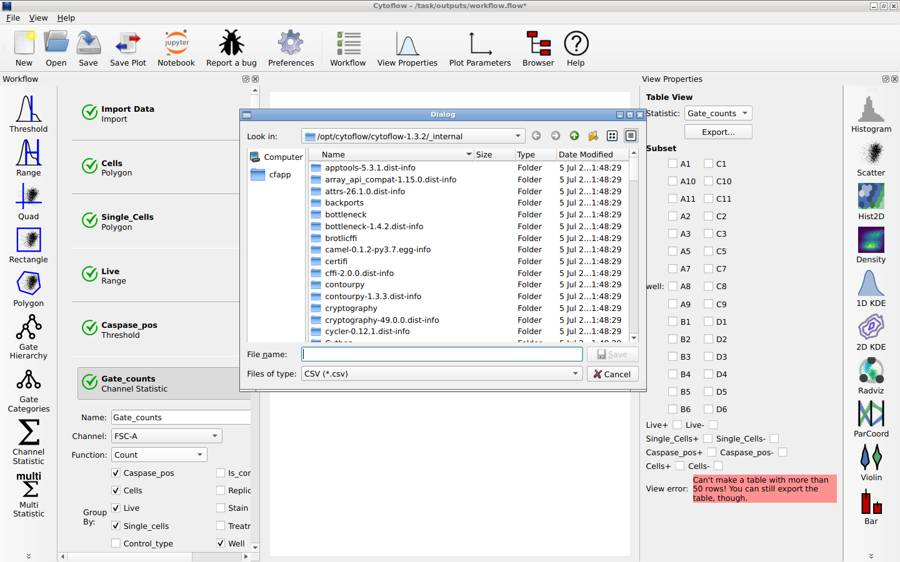
text(await tools.exec_command({cmd:"cu paste '/task/outputs/gate_counts_export.csv'\ncu click 980 567\nsleep 1\ncu key ctrl+s\nhead -12 /task/outputs/gate_counts_export.csv","max_output_tokens":2200}));
Script completed
Wall time 2.5 seconds
Output:
{"chunk_id":"ad8b9a","wall_time_seconds":2.317024959,"exit_code":0,"original_token_count":62,"output":"Caspase_pos,Cells,Live,Single_Cells,well,FSC-A\n0,0,0,0,A10,3030.0\n0,0,0,0,A11,2568.0\n0,0,0,0,A3,1526.0\n0,0,0,0,A5,2836.0\n0,0,0,0,A7,1190.0\n0,0,0,0,A8,1205.0\n0,0,0,0,A9,1736.0\n0,0,0,0,B1,3439.0\n0,0,0,0,B2,3161.0\n0,0,0,0,B3,1450.0\n0,0,0,0,B4,4363.0\n"}text(await tools.exec_command({cmd:"python - <<'PY'\nimport pandas as pd\nfrom pathlib import Path\np=Path('/task/outputs')\nd=pd.read_csv(p/'gate_counts_export.csv'); layout=pd.read_csv('/task/inputs/plate_layout.csv')\npops=['Cells','Single_Cells','Live','Caspase_pos']; rows=[]; summary=[]\nfor _,r in layout.iterrows():\n s=d[d.well==r.well]; parent=int(s['FSC-A'].sum()); counts=[parent]\n for i,pop in enumerate(pops):\n s=s[s[pop]==1]; n=int(s['FSC-A'].sum()); rows.append([r.file,r.well,pop,n,'all_events' if i==0 else pops[i-1],100*n/parent if parent else 0.0]); counts.append(n); parent=n\n summary.append([r.well,*counts])\npd.DataFrame(rows,columns=['file','well','population','count','parent_population','pct_of_parent']).to_csv(p/'counts.csv',index=False)\nsumdf=pd.DataFrame(summary,columns=['well','all_events',*pops]); sumdf['Cells_pct']=100*sumdf.Cells/sumdf.all_events;sumdf['Single_pct']=100*sumdf.Single_Cells/sumdf.Cells;sumdf['Live_pct']=100*sumdf.Live/sumdf.Single_Cells;sumdf['Caspase_pct']=100*sumdf.Caspase_pos/sumdf.Live\nsumdf.to_csv(p/'qc_count_summary.csv',index=False)\nprint(sumdf.round(2).to_string(index=False)); print('Total events:',sumdf.all_events.sum())\nPY","max_output_tokens":4000}));
text(await tools.clock__curr_time({}));
Script completed
Wall time 0.0 seconds
Output:
{"chunk_id":"9864a4","wall_time_seconds":0.00000429,"exit_code":127,"original_token_count":12,"output":"/bin/bash: line 1: python: command not found\n"}
{"current_time":"2026-11-05 08:22:10 UTC"}text(await tools.exec_command({cmd:"python3 - <<'PY'\nimport pandas as pd\nfrom pathlib import Path\np=Path('/task/outputs')\nd=pd.read_csv(p/'gate_counts_export.csv'); layout=pd.read_csv('/task/inputs/plate_layout.csv')\npops=['Cells','Single_Cells','Live','Caspase_pos']; rows=[]; summary=[]\nfor _,r in layout.iterrows():\n s=d[d.well==r.well]; parent=int(s['FSC-A'].sum()); counts=[parent]\n for i,pop in enumerate(pops):\n s=s[s[pop]==1]; n=int(s['FSC-A'].sum()); rows.append([r.file,r.well,pop,n,'all_events' if i==0 else pops[i-1],100*n/parent if parent else 0.0]); counts.append(n); parent=n\n summary.append([r.well,*counts])\npd.DataFrame(rows,columns=['file','well','population','count','parent_population','pct_of_parent']).to_csv(p/'counts.csv',index=False)\nsumdf=pd.DataFrame(summary,columns=['well','all_events',*pops]); sumdf['Cells_pct']=100*sumdf.Cells/sumdf.all_events;sumdf['Single_pct']=100*sumdf.Single_Cells/sumdf.Cells;sumdf['Live_pct']=100*sumdf.Live/sumdf.Single_Cells;sumdf['Caspase_pct']=100*sumdf.Caspase_pos/sumdf.Live\nsumdf.to_csv(p/'qc_count_summary.csv',index=False)\nprint(sumdf.round(2).to_string(index=False)); print('Total events:',sumdf.all_events.sum())\nPY","max_output_tokens":4000}));
Script completed
Wall time 0.4 seconds
Output:
{"chunk_id":"9dc61f","wall_time_seconds":0.207320511,"exit_code":0,"original_token_count":804,"output":"well all_events Cells Single_Cells Live Caspase_pos Cells_pct Single_pct Live_pct Caspase_pct\n A1 90651 27048 21298 21297 336 29.84 78.74 100.00 1.58\n A2 81008 23108 17396 17396 247 28.53 75.28 100.00 1.42\n A3 95933 29231 23657 22604 4022 30.47 80.93 95.55 17.79\n A5 73753 21074 16529 13442 2467 28.57 78.43 81.32 18.35\n A7 64975 18494 14811 13827 3298 28.46 80.09 93.36 23.85\n A8 60216 17436 14505 13404 3208 28.96 83.19 92.41 23.93\n A9 80278 25308 20930 19137 4356 31.53 82.70 91.43 22.76\n A10 64936 20073 15831 12170 2048 30.91 78.87 76.87 16.83\n A11 68296 19643 15727 13028 2433 28.76 80.06 82.84 18.68\n B1 58310 16461 12459 8098 1506 28.23 75.69 65.00 18.60\n B2 51930 14224 11096 7308 934 27.39 78.01 65.86 12.78\n B3 13995 4205 3004 906 232 30.05 71.44 30.16 25.61\n B4 58782 15909 11937 6665 1090 27.06 75.03 55.83 16.35\n B5 33754 8715 5559 150 51 25.82 63.79 2.70 34.00\n B6 8004 2530 1815 124 65 31.61 71.74 6.83 52.42\n C1 95817 26017 21272 21271 57 27.15 81.76 100.00 0.27\n C2 80166 22492 18540 18540 72 28.06 82.43 100.00 0.39\n C3 68270 17670 14374 13672 1895 25.88 81.35 95.12 13.86\n C5 88646 25710 21501 20307 3417 29.00 83.63 94.45 16.83\n C7 119052 26742 19880 19076 5905 22.46 74.34 95.96 30.96\n C8 52267 12665 10392 9567 1868 24.23 82.05 92.06 19.53\n C9 92282 24178 19619 18558 4210 26.20 81.14 94.59 22.69\n C10 88797 22791 17767 14157 2394 25.67 77.96 79.68 16.91\n C11 63651 16522 12676 9230 1701 25.96 76.72 72.81 18.43\n D1 97824 24992 18457 10829 1990 25.55 73.85 58.67 18.38\n D2 73937 21481 16454 10657 1996 29.05 76.60 64.77 18.73\n D3 77334 20993 14956 8122 1500 27.15 71.24 54.31 18.47\n D4 46763 12772 8045 1117 297 27.31 62.99 13.88 26.59\n D5 18412 5297 3500 87 55 28.77 66.08 2.49 63.22\n D6 46753 10454 6898 312 192 22.36 65.98 4.52 61.54\nTotal events: 2014792\n"}text(await tools.exec_command({cmd:"cu click 1394 176\nsleep 1\ncu screenshot /tmp/screen.png","max_output_tokens":1000}));
image((await tools.view_image({path:"/tmp/screen.png"})).image_url);
Script completed Wall time 1.2 seconds Output:
{"chunk_id":"e46fb0","wall_time_seconds":1.004143213,"exit_code":0,"original_token_count":4,"output":"/tmp/screen.png\n"}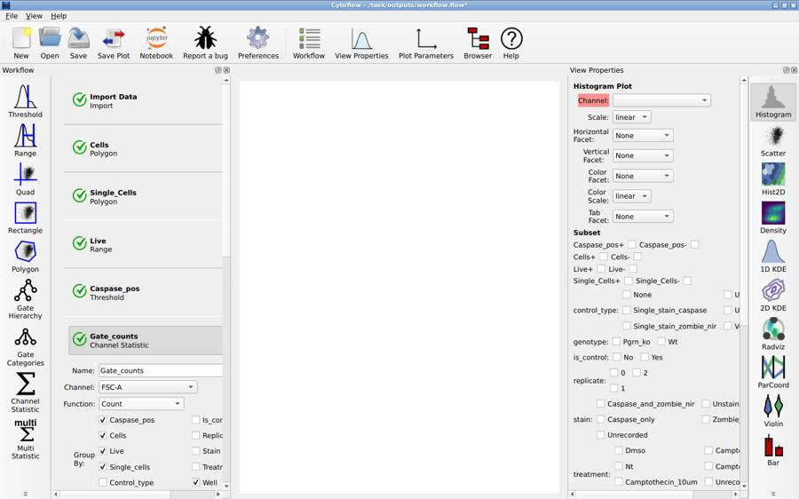
text(await tools.exec_command({cmd:"cu click 1270 181\ncu key End\ncu key Return\ncu click 1202 390\ncu key End\ncu key Up\ncu key Return\nsleep 3\ncu screenshot /tmp/screen.png","max_output_tokens":1000}));
image((await tools.view_image({path:"/tmp/screen.png"})).image_url);
Script completed Wall time 3.4 seconds Output:
{"chunk_id":"dc6453","wall_time_seconds":3.181149857,"exit_code":0,"original_token_count":4,"output":"/tmp/screen.png\n"}text(await tools.exec_command({cmd:"cu move 46 890\nsleep 2\ncu screenshot /tmp/screen.png","max_output_tokens":1000}));
image((await tools.view_image({path:"/tmp/screen.png"})).image_url);
Script completed Wall time 2.1 seconds Output:
{"chunk_id":"817cd2","wall_time_seconds":1.902423618,"exit_code":0,"original_token_count":4,"output":"/tmp/screen.png\n"}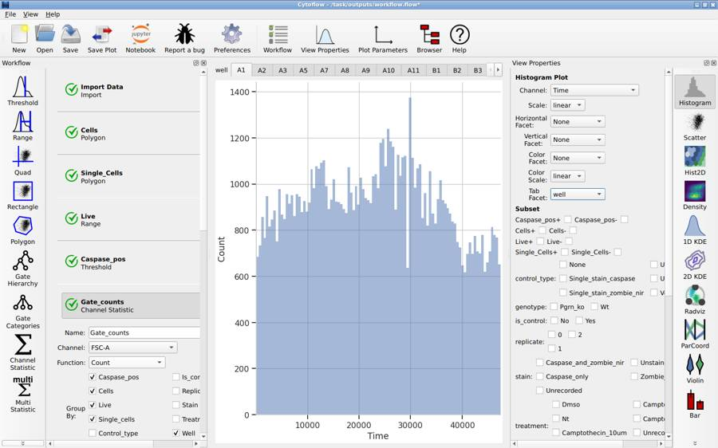
text(await tools.exec_command({cmd:"cu click 46 890\ncu move 50 855\nsleep 1\ncu screenshot /tmp/screen.png","max_output_tokens":1000}));
image((await tools.view_image({path:"/tmp/screen.png"})).image_url);
Script completed Wall time 1.2 seconds Output:
{"chunk_id":"9d50f7","wall_time_seconds":1.008972092,"exit_code":0,"original_token_count":4,"output":"/tmp/screen.png\n"}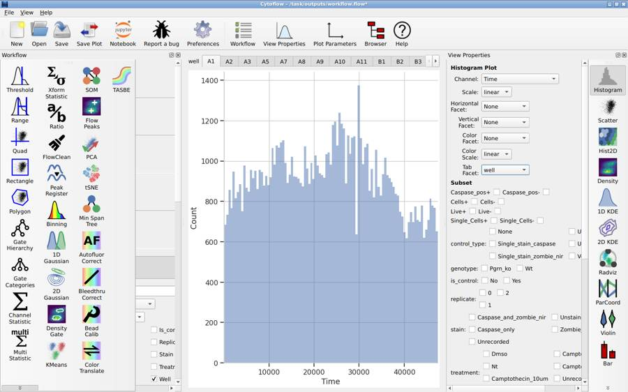
text(await tools.exec_command({cmd:"cu click 129 481\nsleep 1\ncu scroll 310 789 down 8\ncu screenshot /tmp/screen.png","max_output_tokens":1000}));
image((await tools.view_image({path:"/tmp/screen.png"})).image_url);
Script completed Wall time 2.0 seconds Output:
{"chunk_id":"6688dc","wall_time_seconds":1.811119343,"exit_code":0,"original_token_count":4,"output":"/tmp/screen.png\n"}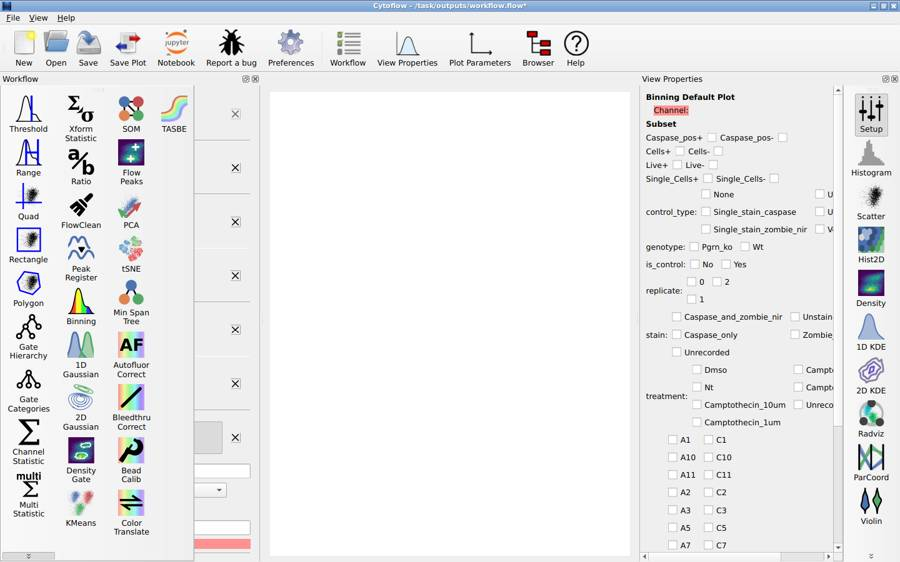
text(await tools.exec_command({cmd:"cu click 890 110\ncu scroll 357 800 down 8\ncu screenshot /tmp/screen.png","max_output_tokens":1000}));
image((await tools.view_image({path:"/tmp/screen.png"})).image_url);
Script completed Wall time 1.0 seconds Output:
{"chunk_id":"901da3","wall_time_seconds":0.808181049,"exit_code":0,"original_token_count":4,"output":"/tmp/screen.png\n"}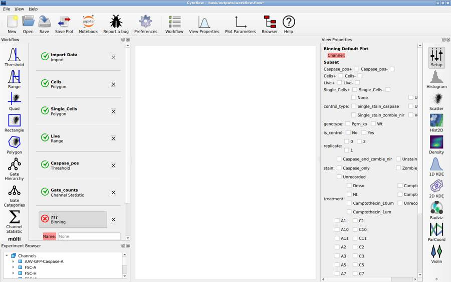
text(await tools.exec_command({cmd:"cu click 409 784\ncu scroll 305 733 down 10\ncu screenshot /tmp/screen.png","max_output_tokens":1000}));
image((await tools.view_image({path:"/tmp/screen.png"})).image_url);
Script completed Wall time 1.2 seconds Output:
{"chunk_id":"9bf08d","wall_time_seconds":1.006974612,"exit_code":0,"original_token_count":4,"output":"/tmp/screen.png\n"}text(await tools.exec_command({cmd:"cu click 269 754\ncu key ctrl+a\ncu type 'QC_Time'\ncu click 351 785\ncu key End\ncu key Return\ncu click 268 845\ncu key ctrl+a\ncu type '1000'\ncu key Tab\nsleep 2\ncu click 46 690\nsleep 1\ncu scroll 321 798 down 10\ncu screenshot /tmp/screen.png","max_output_tokens":1000}));
image((await tools.view_image({path:"/tmp/screen.png"})).image_url);
Script completed Wall time 4.9 seconds Output:
{"chunk_id":"ec16fa","wall_time_seconds":4.706420179,"exit_code":0,"original_token_count":4,"output":"/tmp/screen.png\n"}text(await tools.exec_command({cmd:"cu click 267 778\ncu key ctrl+a\ncu type 'Time_counts'\ncu click 319 839\ncu key Home\ncu key Return\ncu scroll 304 753 down 10\ncu screenshot /tmp/screen.png","max_output_tokens":1000}));
image((await tools.view_image({path:"/tmp/screen.png"})).image_url);
Script completed Wall time 1.6 seconds Output:
{"chunk_id":"8316eb","wall_time_seconds":1.447740203,"exit_code":0,"original_token_count":4,"output":"/tmp/screen.png\n"}text(await tools.exec_command({cmd:"cu scroll 301 731 down 25\ncu screenshot /tmp/screen.png","max_output_tokens":1000}));
image((await tools.view_image({path:"/tmp/screen.png"})).image_url);
Script completed Wall time 2.6 seconds Output:
{"chunk_id":"b7da9f","wall_time_seconds":2.403429385,"exit_code":0,"original_token_count":4,"output":"/tmp/screen.png\n"}text(await tools.exec_command({cmd:"cu scroll 311 420 up 17\ncu screenshot /tmp/screen.png","max_output_tokens":1000}));
image((await tools.view_image({path:"/tmp/screen.png"})).image_url);
Script completed Wall time 1.8 seconds Output:
{"chunk_id":"86fe02","wall_time_seconds":1.601138674,"exit_code":0,"original_token_count":4,"output":"/tmp/screen.png\n"}text(await tools.exec_command({cmd:"cu click 344 427\ncu key End\ncu key Return\ncu click 185 514\ncu click 185 571\ncu click 353 627\ncu click 1394 890\ncu move 1395 853\nsleep 1\ncu screenshot /tmp/screen.png","max_output_tokens":1000}));
image((await tools.view_image({path:"/tmp/screen.png"})).image_url);
Script completed Wall time 1.6 seconds Output:
{"chunk_id":"fc881c","wall_time_seconds":1.456304109,"exit_code":0,"original_token_count":4,"output":"/tmp/screen.png\n"}text(await tools.exec_command({cmd:"cu click 1401 524\ncu click 1193 182\ncu key End\ncu key Return\nsleep 2\ncu click 1149 210\ncu screenshot /tmp/screen.png","max_output_tokens":1000}));
image((await tools.view_image({path:"/tmp/screen.png"})).image_url);
Script completed Wall time 2.4 seconds Output:
{"chunk_id":"8c560f","wall_time_seconds":2.248413015,"exit_code":0,"original_token_count":4,"output":"/tmp/screen.png\n"}text(await tools.exec_command({cmd:"cu paste '/task/outputs/time_counts_export.csv'\ncu click 980 568\nsleep 1\ncu key ctrl+s\nhead -5 /task/outputs/time_counts_export.csv","max_output_tokens":1000}));
Script completed
Wall time 2.5 seconds
Output:
{"chunk_id":"c4df0f","wall_time_seconds":2.31491836,"exit_code":0,"original_token_count":20,"output":"Cells,QC_Time,well,Time\n0,0,A1,936.0\n0,0,A10,846.0\n0,0,A11,782.0\n0,0,A2,914.0\n"}text(await tools.exec_command({cmd:"python3 - <<'PY'\nimport pandas as pd, numpy as np, matplotlib\nmatplotlib.use('Agg')\nimport matplotlib.pyplot as plt\np='/task/outputs/'\nd=pd.read_csv(p+'time_counts_export.csv'); l=pd.read_csv('/task/inputs/plate_layout.csv').well\nv=d.groupby(['well','QC_Time']).Time.sum().unstack(fill_value=0).reindex(l).fillna(0)\nc=d[d.Cells==1].pivot_table(index='well',columns='QC_Time',values='Time',aggfunc='sum',fill_value=0).reindex(index=l,columns=v.columns).fillna(0)\nprint('Bins:',v.columns.tolist()); print('TOTAL',v.sum().sum())\nprint(v.astype(int).to_string())\nfig,axs=plt.subplots(6,5,figsize=(18,17),sharex=True)\nfor ax,w in zip(axs.flat,l):\n ax.plot(v.columns/1000,v.loc[w],label='all',color='black');ax.plot(c.columns/1000,c.loc[w],label='Cells',color='#198c90');ax.set_title(w);ax.grid(alpha=.2)\naxs[0,0].legend();fig.supxlabel('Time (1000 native units; counts per bin of width 1000)');fig.supylabel('Events per bin');fig.tight_layout();fig.savefig(p+'time_qc.png',dpi=130)\nPY","max_output_tokens":6000}));
image((await tools.view_image({path:"/task/outputs/time_qc.png"})).image_url);
Script completed Wall time 1.7 seconds Output:
{"chunk_id":"0aa694","wall_time_seconds":1.4908163669999999,"exit_code":0,"original_token_count":2839,"output":"Bins: [0, 1000, 2000, 3000, 4000, 5000, 6000, 7000, 8000, 9000, 10000, 11000, 12000, 13000, 14000, 15000, 16000, 17000, 18000, 19000, 20000, 21000, 22000, 23000, 24000, 25000, 26000, 27000, 28000, 29000, 30000, 31000, 32000, 33000, 34000, 35000, 36000, 37000, 38000, 39000, 40000, 41000, 42000, 43000, 44000, 45000, 46000, 47000]\nTOTAL 2014792.0\nQC_Time 0 1000 2000 3000 4000 5000 6000 7000 8000 9000 10000 11000 12000 13000 14000 15000 16000 17000 18000 19000 20000 21000 22000 23000 24000 25000 26000 27000 28000 29000 30000 31000 32000 33000 34000 35000 36000 37000 38000 39000 40000 41000 42000 43000 44000 45000 46000 47000\nwell \nA1 1456 1709 1846 1785 1795 1818 2006 1868 1940 1884 2042 2144 2243 2185 1957 1954 1868 1948 2064 1960 2055 1938 2038 2134 2468 2363 2460 2121 2090 2330 2224 2065 2005 2027 1783 2002 1934 1813 1780 1467 1340 1471 1544 1530 1361 1531 1660 645\nA2 1434 1595 1559 1576 1628 1623 1649 1742 1736 1816 1787 1784 1706 1726 1613 1734 1702 1734 1802 1625 1692 1738 1873 2031 1968 2572 2299 2156 2204 2243 1755 1962 2017 1968 1773 1599 1781 1781 1679 1699 1578 1467 1362 1347 1328 1286 279 0\nA3 1592 1892 1949 1937 1900 1952 2034 2047 1983 2120 2083 2069 2157 2107 1939 2122 2024 2031 2050 2004 2058 2051 2023 2249 2385 2549 2493 2574 2482 2442 2320 2303 2373 2287 2203 2091 1996 2043 2015 1926 1712 1639 1579 1516 1565 1449 1475 143\nA5 1505 1597 1508 1548 1546 1615 1665 1610 1679 1648 1682 1583 1609 1613 1574 1613 1646 1650 1640 1394 1621 1598 1721 1763 1790 2011 1855 1872 1889 1819 1762 1811 1801 1738 1650 1636 1607 1529 1437 1327 1232 1129 1238 1264 1134 1217 377 0\nA7 1219 1415 1439 1386 1491 1519 1601 1687 1654 1626 1508 1402 1550 1539 1446 1432 1381 1388 1351 1328 1290 1354 1464 1606 1615 1720 1788 1637 1493 1561 1426 1542 1430 1414 1323 1334 1330 1245 1265 1129 1027 1027 1088 1116 1056 1039 294 0\nA8 1170 1225 1302 1317 1288 1269 1260 1250 1300 1346 1373 1303 1253 1251 1286 1248 1227 1262 1336 1272 1267 1363 1547 1600 1606 1635 1579 1669 1575 1580 1524 1479 1490 1370 1323 1276 1144 1104 1058 1095 1026 920 863 917 1041 859 667 101\nA9 1471 1575 1678 1668 1631 1685 1696 1717 1780 1727 1702 1700 1700 1755 1772 1664 1680 1872 1636 1704 1732 1809 1896 2041 2143 2120 2150 2161 2065 2022 1968 1964 1950 1857 1730 1592 1744 1722 1642 1511 1528 1430 1397 1365 1310 1105 511 0\nA10 1312 1415 1331 1350 1372 1399 1430 1388 1348 1416 1453 1417 1467 1460 1439 1387 1527 1321 1472 1443 1400 1493 1581 1602 1702 1844 1727 1625 1755 1578 1565 1426 1424 1429 1373 1287 1314 1178 1149 1195 1091 1018 939 967 1012 1117 841 157\nA11 1217 1369 1405 1534 1499 1537 1536 1533 1462 1495 1523 1550 1546 1493 1521 1434 1616 1456 1445 1429 1378 1584 1639 1594 1808 1299 2022 1876 1744 1704 1639 1620 1535 1554 1641 1478 1500 1372 1293 1320 1212 1168 1139 1103 1076 1014 384 0\nB1 1031 1147 1267 1262 1249 1190 1320 1295 1248 1331 1304 1255 1209 1266 1394 1102 1446 1318 1264 1327 1282 1337 1487 1499 1471 1102 1569 506 1187 2405 1508 1409 1383 1300 1321 1340 1277 1260 1054 951 1009 1067 1009 953 940 1042 417 0\nB2 792 901 1007 1078 1097 1158 985 1130 1111 1114 1092 1179 1207 1202 1059 1204 1088 1167 1134 1122 1113 1111 1137 1152 1232 1313 1401 1282 1326 1375 1232 1251 1180 1117 1106 1085 971 1007 955 1058 1015 947 976 885 949 869 927 131\nB3 237 274 294 313 332 325 315 327 316 316 353 310 316 319 322 312 316 321 317 289 314 325 330 328 349 326 341 318 341 306 335 325 355 271 268 268 247 229 245 233 242 232 225 214 248 280 242 34\nB4 1215 1320 1362 1312 1334 1255 1269 1341 1353 1408 1367 1312 1325 1295 1312 1186 1302 1257 1278 1292 1217 1333 1408 1529 1441 1404 1348 843 1774 1476 1061 1480 1390 1360 1257 1255 1229 1174 1120 1009 986 1140 1074 1044 980 1184 171 0\nB5 686 725 705 735 759 691 736 724 775 774 799 828 810 721 717 820 751 745 767 755 612 887 761 907 797 701 902 482 917 888 787 779 753 753 701 683 713 745 717 670 593 560 610 582 490 543 198 0\nB6 134 16
… [5,502 more characters not shown]text(await tools.exec_command({cmd:"cu key ctrl+s\ncu key ctrl+e\ncu screenshot /tmp/screen.png","max_output_tokens":1000}));
image((await tools.view_image({path:"/tmp/screen.png"})).image_url);
Script completed Wall time 0.1 seconds Output:
{"chunk_id":"4884d2","wall_time_seconds":0.00000397,"exit_code":0,"original_token_count":4,"output":"/tmp/screen.png\n"}text(await tools.exec_command({cmd:"sleep 1\ncu screenshot /tmp/screen.png","max_output_tokens":1000}));
image((await tools.view_image({path:"/tmp/screen.png"})).image_url);
Script completed Wall time 1.1 seconds Output:
{"chunk_id":"dac608","wall_time_seconds":0.901688033,"exit_code":0,"original_token_count":4,"output":"/tmp/screen.png\n"}text(await tools.exec_command({cmd:"cu click 660 575\ncu paste '/task/outputs/qc_workflow.flow'\ncu click 980 576\nsleep 1\ncu click 46 175\nsleep 1\ncu scroll 113 813 down 10\ncu screenshot /tmp/screen.png","max_output_tokens":1000}));
image((await tools.view_image({path:"/tmp/screen.png"})).image_url);
Script completed Wall time 4.7 seconds Output:
{"chunk_id":"f505cd","wall_time_seconds":4.55114522,"exit_code":0,"original_token_count":4,"output":"/tmp/screen.png\n"}text(await tools.exec_command({cmd:"cu click 259 770\ncu key ctrl+a\ncu type 'QC_SSC_ceiling'\ncu click 352 801\ncu key Home\ncu key Down\ncu key Down\ncu key Down\ncu key Down\ncu key Down\ncu key Return\ncu click 256 831\ncu key ctrl+a\ncu type '1048570'\ncu key Tab\nsleep 2\ncu click 46 175\nsleep 1\ncu scroll 112 799 down 8\ncu screenshot /tmp/screen.png","max_output_tokens":1000}));
image((await tools.view_image({path:"/tmp/screen.png"})).image_url);
Script completed Wall time 5.0 seconds Output:
{"chunk_id":"f8c9eb","wall_time_seconds":4.844745847,"exit_code":0,"original_token_count":4,"output":"/tmp/screen.png\n"}text(await tools.exec_command({cmd:"cu click 234 644\ncu screenshot /tmp/screen.png","max_output_tokens":1000}));
image((await tools.view_image({path:"/tmp/screen.png"})).image_url);
Script completed Wall time 0.2 seconds Output:
{"chunk_id":"cbd117","wall_time_seconds":0.00157102,"exit_code":0,"original_token_count":4,"output":"/tmp/screen.png\n"}text(await tools.exec_command({cmd:"sleep 1\ncu screenshot /tmp/screen.png","max_output_tokens":1000}));
image((await tools.view_image({path:"/tmp/screen.png"})).image_url);
Script completed Wall time 1.1 seconds Output:
{"chunk_id":"a6e1df","wall_time_seconds":0.898569534,"exit_code":0,"original_token_count":4,"output":"/tmp/screen.png\n"}text(await tools.exec_command({cmd:"cu click 269 759\ncu key ctrl+a\ncu type '1048570'\ncu key Tab\nsleep 1\ncu click 229 841\nsleep 1\ncu scroll 113 818 down 5\ncu screenshot /tmp/screen.png","max_output_tokens":1000}));
image((await tools.view_image({path:"/tmp/screen.png"})).image_url);
Script completed Wall time 3.0 seconds Output:
{"chunk_id":"d1ff31","wall_time_seconds":2.839647098,"exit_code":0,"original_token_count":4,"output":"/tmp/screen.png\n"}text(await tools.exec_command({cmd:"cu click 268 770\ncu key ctrl+a\ncu type 'QC_FSC_ceiling'\ncu click 269 832\ncu key ctrl+a\ncu type '1048570'\ncu click 352 800\ncu key Home\ncu key Down\ncu key Return\nsleep 2\ncu screenshot /tmp/screen.png","max_output_tokens":1000}));
image((await tools.view_image({path:"/tmp/screen.png"})).image_url);
Script completed Wall time 3.0 seconds Output:
{"chunk_id":"f3d175","wall_time_seconds":2.854029182,"exit_code":0,"original_token_count":4,"output":"/tmp/screen.png\n"}text(await tools.exec_command({cmd:"cu click 352 816\ncu key Home\ncu key Down\ncu key Return\nsleep 2\ncu click 46 175\nsleep 1\ncu scroll 112 800 down 6\ncu screenshot /tmp/screen.png","max_output_tokens":1000}));
image((await tools.view_image({path:"/tmp/screen.png"})).image_url);
Script completed Wall time 3.9 seconds Output:
{"chunk_id":"649d54","wall_time_seconds":3.763471542,"exit_code":0,"original_token_count":4,"output":"/tmp/screen.png\n"}text(await tools.exec_command({cmd:"cu click 268 771\ncu key ctrl+a\ncu type 'QC_BL1_ceiling'\ncu key Tab\ncu key Home\ncu key Return\ncu key Tab\ncu key ctrl+a\ncu type '1048570'\ncu key Tab\nsleep 2\ncu screenshot /tmp/screen.png","max_output_tokens":1000}));
image((await tools.view_image({path:"/tmp/screen.png"})).image_url);
Script completed Wall time 2.9 seconds Output:
{"chunk_id":"2ab896","wall_time_seconds":2.673947381,"exit_code":0,"original_token_count":4,"output":"/tmp/screen.png\n"}text(await tools.exec_command({cmd:"sleep 1\ncu click 46 175\nsleep 1\ncu scroll 112 802 down 7\ncu screenshot /tmp/screen.png","max_output_tokens":1000}));
image((await tools.view_image({path:"/tmp/screen.png"})).image_url);
Script completed Wall time 2.9 seconds Output:
{"chunk_id":"497119","wall_time_seconds":2.712180977,"exit_code":0,"original_token_count":4,"output":"/tmp/screen.png\n"}text(await tools.exec_command({cmd:"cu click 268 771\ncu key ctrl+a\ncu type 'QC_RL3_ceiling'\ncu key Tab\ncu key Home\ncu key Down\ncu key Down\ncu key Down\ncu key Down\ncu key Return\ncu key Tab\ncu key ctrl+a\ncu type '1048570'\ncu key Tab\nsleep 3\ncu click 46 690\nsleep 1\ncu scroll 112 802 down 14\ncu screenshot /tmp/screen.png","max_output_tokens":1000}));
image((await tools.view_image({path:"/tmp/screen.png"})).image_url);
Script completed Wall time 6.4 seconds Output:
{"chunk_id":"6d1d12","wall_time_seconds":6.23939689,"exit_code":0,"original_token_count":4,"output":"/tmp/screen.png\n"}text(await tools.exec_command({cmd:"cu scroll 112 400 up 8\ncu screenshot /tmp/screen.png","max_output_tokens":1000}));
image((await tools.view_image({path:"/tmp/screen.png"})).image_url);
Script completed Wall time 0.9 seconds Output:
{"chunk_id":"3a22d4","wall_time_seconds":0.70267833,"exit_code":0,"original_token_count":4,"output":"/tmp/screen.png\n"}text(await tools.exec_command({cmd:"cu click 268 498\ncu key ctrl+a\ncu type 'Ceiling_counts'\ncu key Tab\ncu key End\ncu key Return\ncu key Tab\ncu key Home\ncu key Return\ncu key Tab\nsleep 1\ncu screenshot /tmp/screen.png","max_output_tokens":1000}));
image((await tools.view_image({path:"/tmp/screen.png"})).image_url);
Script completed Wall time 1.7 seconds Output:
{"chunk_id":"fe663e","wall_time_seconds":1.492896976,"exit_code":0,"original_token_count":4,"output":"/tmp/screen.png\n"}text(await tools.exec_command({cmd:"cu click 185 671\ncu click 185 699\ncu click 185 726\ncu click 185 754\ncu click 185 783\ncu click 353 783\ncu click 1394 890\ncu move 1394 850\nsleep 1\ncu click 1401 524\ncu click 1193 182\ncu key Home\ncu key Return\nsleep 2\ncu screenshot /tmp/screen.png","max_output_tokens":1000}));
image((await tools.view_image({path:"/tmp/screen.png"})).image_url);
Script completed Wall time 4.1 seconds Output:
{"chunk_id":"c7b887","wall_time_seconds":3.875751959,"exit_code":0,"original_token_count":4,"output":"/tmp/screen.png\n"}text(await tools.exec_command({cmd:"sleep 2\ncu click 1152 210\ncu screenshot /tmp/screen.png","max_output_tokens":1000}));
image((await tools.view_image({path:"/tmp/screen.png"})).image_url);
Script completed Wall time 2.2 seconds Output:
{"chunk_id":"f1e354","wall_time_seconds":2.008042337,"exit_code":0,"original_token_count":4,"output":"/tmp/screen.png\n"}text(await tools.exec_command({cmd:"cu paste '/task/outputs/ceiling_counts_export.csv'\ncu click 980 568\nsleep 1\ncu key ctrl+s\npython3 - <<'PY'\nimport pandas as pd\np='/task/outputs/'\nd=pd.read_csv(p+'ceiling_counts_export.csv'); out=[]\nfor w in pd.read_csv('/task/inputs/plate_layout.csv').well:\n s=d[d.well==w]; n=s.Time.sum(); r={'well':w,'all_events':int(n)}\n for col in [c for c in d if c.endswith('ceiling')]:\n k=int(s.loc[s[col]==1,'Time'].sum());r[col+'_n']=k;r[col+'_pct']=round(k/n*100,3)\n out.append(r)\nt=pd.DataFrame(out);t.to_csv(p+'qc_ceiling_summary.csv',index=False);print(t.to_string(index=False))\nPY","max_output_tokens":3500}));
Script completed
Wall time 2.7 seconds
Output:
{"chunk_id":"638e47","wall_time_seconds":2.522863,"exit_code":0,"original_token_count":1310,"output":"well all_events QC_BL1_ceiling_n QC_BL1_ceiling_pct QC_FSC_ceiling_n QC_FSC_ceiling_pct QC_RL3_ceiling_n QC_RL3_ceiling_pct QC_SSC_ceiling_n QC_SSC_ceiling_pct\n A1 90651 0 0.000 3838 4.234 0 0.000 27577 30.421\n A2 81008 0 0.000 2330 2.876 0 0.000 21822 26.938\n A3 95933 1 0.001 1760 1.835 0 0.000 25603 26.688\n A5 73753 0 0.000 1583 2.146 64 0.087 21283 28.857\n A7 64975 0 0.000 715 1.100 2 0.003 17157 26.406\n A8 60216 0 0.000 1049 1.742 4 0.007 17729 29.442\n A9 80278 2 0.002 1443 1.798 3 0.004 19900 24.789\n A10 64936 1 0.002 1248 1.922 162 0.249 16336 25.157\n A11 68296 2 0.003 2011 2.945 47 0.069 18566 27.185\n B1 58310 1 0.002 1282 2.199 234 0.401 15966 27.381\n B2 51930 3 0.006 1677 3.229 86 0.166 12432 23.940\n B3 13995 0 0.000 85 0.607 5 0.036 1851 13.226\n B4 58782 0 0.000 1354 2.303 106 0.180 11797 20.069\n B5 33754 0 0.000 277 0.821 274 0.812 8944 26.498\n B6 8004 0 0.000 18 0.225 6 0.075 1236 15.442\n C1 95817 0 0.000 5576 5.819 0 0.000 34362 35.862\n C2 80166 0 0.000 3758 4.688 0 0.000 27232 33.970\n C3 68270 1 0.001 2937 4.302 1 0.001 25225 36.949\n C5 88646 0 0.000 4772 5.383 44 0.050 35289 39.809\n C7 119052 0 0.000 3402 2.858 3 0.003 37950 31.877\n C8 52267 0 0.000 1932 3.696 33 0.063 18567 35.523\n C9 92282 4 0.004 4193 4.544 31 0.034 33533 36.338\n C10 88797 4 0.005 3905 4.398 128 0.144 26969 30.372\n C11 63651 2 0.003 2553 4.011 229 0.360 18895 29.685\n D1 97824 6 0.006 3979 4.068 330 0.337 24121 24.658\n D2 73937 7 0.009 2501 3.383 191 0.258 19679 26.616\n D3 77334 8 0.010 2630 3.401 382 0.494 22017 28.470\n D4 46763 0 0.000 744 1.591 424 0.907 12455 26.634\n D5 18412 1 0.005 252 1.369 194 1.054 4673 25.380\n D6 46753 0 0.000 606 1.296 339 0.725 10515 22.491\n"}text(await tools.exec_command({cmd:"sed -n '1,100p' /task/outputs/workflow.flow\nrg -n 'vertices|name: Cells|name: Single_Cells|name: Live|name: Caspase_pos|low:|high:|threshold:|xchannel:|ychannel:|subset|bin_width' /task/outputs/workflow.flow","max_output_tokens":4000}));
Script completed
Wall time 0.0 seconds
Output:
{"chunk_id":"16a3d7","wall_time_seconds":0.00000403,"exit_code":0,"original_token_count":1605,"output":"- !workflow-item;5\n channels:\n - AAV-GFP-Caspase-A\n - FSC-A\n - FSC-H\n - FSC-W\n - LiveDead-Zombie NIR-A\n - SSC-A\n - SSC-H\n - SSC-W\n - Time\n conditions:\n control_type: !pandas-series;3\n data:\n - none\n - single_stain_caspase\n - single_stain_zombie_nir\n - unstained\n - untreated\n - vehicle\n dtype: object\n index: !pandas-index;1\n dtype: int64\n name: null\n values:\n - 5\n - 2\n - 1\n - 0\n - 4\n - 3\n genotype: !pandas-series;3\n data:\n - PGRN_KO\n - WT\n dtype: object\n index: !pandas-index;1\n dtype: int64\n name: null\n values:\n - 1\n - 0\n is_control: !pandas-series;3\n data:\n - 'no'\n - 'yes'\n dtype: object\n index: !pandas-index;1\n dtype: int64\n name: null\n values:\n - 1\n - 0\n replicate: !pandas-series;3\n data:\n - '0'\n - '1'\n - '2'\n dtype: object\n index: !pandas-index;1\n dtype: int64\n name: null\n values:\n - 2\n - 0\n - 1\n stain: !pandas-series;3\n data:\n - caspase_and_zombie_nir\n - caspase_only\n - unrecorded\n - unstained\n - zombie_nir_only\n dtype: object\n index: !pandas-index;1\n dtype: int64\n name: null\n values:\n - 3\n - 2\n - 4\n - 0\n - 1\n treatment: !pandas-series;3\n data:\n - DMSO\n - NT\n - camptothecin_10uM\n - camptothecin_1uM\n - camptothecin_20uM\n - camptothecin_5uM\n - unrecorded\n dtype: object\n index: !pandas-index;1\n dtype: int64\n name: null\n values:\n - 1\n - 0\n - 4\n195: fcs_name: LiveDead-Zombie NIR-A\n1127: name: Cells\n1128: vertices:\n1162: xchannel: FSC-A\n1164: ychannel: SSC-A\n1193: subset_list:\n1194: - !category-subset;1\n1204: - !category-subset;1\n1210: - !category-subset;1\n1216: - !category-subset;1\n1223: - !category-subset;1\n1232: - !category-subset;1\n1243: - !category-subset;1\n1306: fcs_name: LiveDead-Zombie NIR-A\n1936: name: Single_Cells\n1937: vertices:\n1950: xchannel: SSC-H\n1952: ychannel: SSC-A\n1981: subset_list:\n1982: - !bool-subset;1\n1983: name: Cells\n1987: - !category-subset;1\n1997: - !category-subset;1\n2003: - !category-subset;1\n2009: - !category-subset;1\n2016: - !category-subset;1\n2025: - !category-subset;1\n2036: - !category-subset;1\n2099: fcs_name: LiveDead-Zombie NIR-A\n2747: high: 5000.0\n2748: low: -1000000.0\n2749: name: Live\n2778: subset_list:\n2779: - !bool-subset;1\n2780: name: Cells\n2784: - !bool-subset;1\n2785: name: Single_Cells\n2789: - !category-subset;1\n2799: - !category-subset;1\n2805: - !category-subset;1\n2811: - !category-subset;1\n2818: - !category-subset;1\n2827: - !category-subset;1\n2838: - !category-subset;1\n2908: fcs_name: LiveDead-Zombie NIR-A\n3567: name: Caspase_pos\n3568: threshold: 3000.0\n3595: subset_list:\n3596: - !bool-subset;1\n3597: name: Cells\n3601: - !bool-subset;1\n3602: name: Live\n3606: - !bool-subset;1\n3607: name: Single_Cells\n3611: - !category-subset;1\n3621: - !category-subset;1\n3627: - !category-subset;1\n3633: - !category-subset;1\n3640: - !category-subset;1\n3649: - !category-subset;1\n3660: - !category-subset;1\n3737: fcs_name: LiveDead-Zombie NIR-A\n4423: subset_list:\n4424: - !bool-subset;1\n4425: name: Caspase_pos\n4429: - !bool-subset;1\n4430: name: Cells\n4434: - !bool-subset;1\n4435: name: Live\n4439: - !bool-subset;1\n4440: name: Single_Cells\n4444: - !category-subset;1\n4454: - !category-subset;1\n4460: - !category-subset;1\n4466: - !category-subset;1\n4473: - !category-subset;1\n4482: - !category-subset;1\n4493: - !category-subset;1\n4572: fcs_name: LiveDead-Zombie NIR-A\n4712: subset_list:\n4713: - !bool-subset;1\n4714: name: Caspase_pos\n4718: - !bool-subset;1\n4719: name: Cells\n4723: - !bool-subset;1\n4724: name: Live\n4728: - !bool-subset;1\n4729: name: Single_Cells\n4733: - !category-subset;1\n4743: - !category-subset;1\n4749: - !category-subset;1\n4755: - !category-subset;1\n4762: - !category-subset;1\n4771: - !category-subset;1\n4782: - !category-subset;1\n7872: name: Caspase_pos\n7878: name: Cells\n7884: name: Live\n7890: name: Single_Cells\n7939: subset_list:\n7940: - !bool-subset;1\n7941: name: Caspase_pos\n7945: - !bool-subset;1\n7946: name: Cells\n7950: - !bool-subset;1\n7951: name: Live\n7955: - !bool-subset;1\n7956: name: Single_Cells\n7960: - !category-subset;1\n8266: bin_width: 1000.0\n8270: subset_list:\n8271: - !bool-subset;1\n8272: name: Caspase_pos\n8276: - !bool-subset;1\n8277: name: Cells\n8281: - !bool-subset;1\n8282: name: Live\n8286: - !bool-subset;1\n8287: name: Single_Cells\n8291: - !category-subset;1\n8301: - !category-subset;1\n8307: - !category-subset;1\n8313: - !category-subset;1\n8320: - !category-subset;1\n8329: - !category-subset;1\n8340: - !category-subset;1\n8417: fcs_name: LiveDead-Zombie NIR-A\n11659: name: Caspase_pos\n11665: name: Cells\n11671: name: Live\n11677: name: Single_Cells\n11996: subset_list:\n11997: - !bool-subset;1\n11998: name: Cells\n12002
… [834 more characters not shown]text(await tools.exec_command({cmd:"cu click 1393 244\nsleep 1\ncu screenshot /tmp/screen.png","max_output_tokens":1000}));
image((await tools.view_image({path:"/tmp/screen.png"})).image_url);
Script completed Wall time 1.2 seconds Output:
{"chunk_id":"adb275","wall_time_seconds":1.002191424,"exit_code":0,"original_token_count":4,"output":"/tmp/screen.png\n"}text(await tools.exec_command({cmd:"cu click 1298 181\ncu key End\ncu key Return\ncu click 1298 240\ncu key Home\ncu key Down\ncu key Return\ncu click 1246 481\ncu key End\ncu key Up\ncu key Return\nsleep 3\ncu screenshot /tmp/screen.png","max_output_tokens":1000}));
image((await tools.view_image({path:"/tmp/screen.png"})).image_url);
Script completed Wall time 3.5 seconds Output:
{"chunk_id":"97061e","wall_time_seconds":3.352212351,"exit_code":0,"original_token_count":4,"output":"/tmp/screen.png\n"}text(await tools.exec_command({cmd:"cu click 772 70\nsleep 1\ncu screenshot /tmp/screen.png","max_output_tokens":1000}));
image((await tools.view_image({path:"/tmp/screen.png"})).image_url);
Script completed Wall time 1.2 seconds Output:
{"chunk_id":"3c9da1","wall_time_seconds":1.027697095,"exit_code":0,"original_token_count":4,"output":"/tmp/screen.png\n"}text(await tools.exec_command({cmd:"cu click 1231 644\ncu key ctrl+a\ncu type '0.15'\ncu click 1232 675\ncu key ctrl+a\ncu type '1'\ncu key Tab\ncu click 483 140\ncu key Right\nsleep 2\ncu screenshot /tmp/screen.png","max_output_tokens":1000}));
image((await tools.view_image({path:"/tmp/screen.png"})).image_url);
Script completed Wall time 2.6 seconds Output:
{"chunk_id":"a50124","wall_time_seconds":2.453666776,"exit_code":0,"original_token_count":4,"output":"/tmp/screen.png\n"}text(await tools.exec_command({cmd:"cu click 876 139\nsleep 2\ncu screenshot /tmp/qc_B1.png","max_output_tokens":1000}));
image((await tools.view_image({path:"/tmp/qc_B1.png"})).image_url);
Script completed Wall time 2.2 seconds Output:
{"chunk_id":"da1fc4","wall_time_seconds":2.022533412,"exit_code":0,"original_token_count":4,"output":"/tmp/qc_B1.png\n"}text(await tools.exec_command({cmd:"cu scroll 112 400 up 20\ncu screenshot /tmp/screen.png","max_output_tokens":1000}));
image((await tools.view_image({path:"/tmp/screen.png"})).image_url);
Script completed Wall time 2.1 seconds Output:
{"chunk_id":"32f854","wall_time_seconds":1.9220961,"exit_code":0,"original_token_count":4,"output":"/tmp/screen.png\n"}text(await tools.exec_command({cmd:"cu click 236 697\nsleep 1\ncu scroll 112 810 down 4\ncu screenshot /tmp/screen.png","max_output_tokens":1000}));
image((await tools.view_image({path:"/tmp/screen.png"})).image_url);
Script completed Wall time 1.6 seconds Output:
{"chunk_id":"eca57f","wall_time_seconds":1.408913398,"exit_code":0,"original_token_count":4,"output":"/tmp/screen.png\n"}text(await tools.exec_command({cmd:"cu click 270 595\ncu key ctrl+a\ncu type '100'\ncu key Tab\nsleep 3\ncu click 237 657\nsleep 1\ncu screenshot /tmp/screen.png","max_output_tokens":1000}));
image((await tools.view_image({path:"/tmp/screen.png"})).image_url);
Script completed Wall time 4.4 seconds Output:
{"chunk_id":"271a38","wall_time_seconds":4.232485732,"exit_code":0,"original_token_count":4,"output":"/tmp/screen.png\n"}text(await tools.exec_command({cmd:"cu click 270 595\ncu key ctrl+a\ncu type '500'\ncu key Tab\nsleep 3\ncu click 237 656\nsleep 2\ncu screenshot /tmp/screen.png","max_output_tokens":1000}));
image((await tools.view_image({path:"/tmp/screen.png"})).image_url);
Script completed Wall time 5.4 seconds Output:
{"chunk_id":"70d841","wall_time_seconds":5.230269398,"exit_code":0,"original_token_count":4,"output":"/tmp/screen.png\n"}text(await tools.exec_command({cmd:"cu click 185 680\ncu click 185 736\ncu click 185 792\nsleep 3\ncu click 1149 210\ncu screenshot /tmp/screen.png","max_output_tokens":1000}));
image((await tools.view_image({path:"/tmp/screen.png"})).image_url);
Script completed Wall time 3.5 seconds Output:
{"chunk_id":"05d263","wall_time_seconds":3.320049203,"exit_code":0,"original_token_count":4,"output":"/tmp/screen.png\n"}text(await tools.exec_command({cmd:"cu click 981 598\nsleep 5\ncu click 1150 210\nsleep 1\ncu paste '/task/outputs/time_gate_counts_500_export.csv'\ncu click 980 568\nsleep 1\ncu key ctrl+s\nhead -4 /task/outputs/time_gate_counts_500_export.csv","max_output_tokens":1000}));
Script completed
Wall time 8.7 seconds
Output:
{"chunk_id":"bae7ae","wall_time_seconds":8.530165189,"exit_code":0,"original_token_count":28,"output":"Cells,QC_Time,well,Caspase_pos,Live,Single_Cells,Time\n0,0,A1,0,1,0,221.0\n0,0,A1,0,1,1,154.0\n0,0,A1,1,0,0,3.0\n"}text(await tools.exec_command({cmd:"python3 - <<'PY'\nimport pandas as pd, numpy as np\np='/task/outputs/'\nd=pd.read_csv(p+'time_gate_counts_500_export.csv'); order=pd.read_csv('/task/inputs/plate_layout.csv').well\nv=d.groupby(['well','QC_Time']).Time.sum().unstack(fill_value=0).reindex(index=order,columns=np.arange(0,48000,500)).fillna(0)\nrows=[]\nfor w in order:\n s=v.loc[w]; ref=s.rolling(11,center=True,min_periods=5).median(); rel=s/ref; ri=rel.loc[1000:44500]; i=ri.idxmin();bad=ri[ri<.25];rr={'well':w,'minbin':i,'n':int(s[i]),'local_median':ref[i],'ratio':round(ri.min(),3),'low_bins':','.join(str(int(x)) for x in bad.index),'peak_ratio':round(ri.max(),2)};rows.append(rr)\nprint(pd.DataFrame(rows).to_string(index=False));pd.DataFrame(rows).to_csv(p+'qc_flow_metrics.csv',index=False)\nprint('sum:',v.sum().sum())\nfor w in ['A1','A11','B1','B4','C1','C2','C7','C9','C10','C11','D1','D2','D3','D4','D5','D6']:\n s=v.loc[w];r=s/s.rolling(11,center=True,min_periods=5).median(); ids=r.loc[1000:44500][r.loc[1000:44500]<.5].index; print(w,[(int(x),int(s[x])) for x in ids])\nPY","max_output_tokens":4000}));
Script completed
Wall time 0.2 seconds
Output:
{"chunk_id":"2bf35b","wall_time_seconds":0.053933569,"exit_code":0,"original_token_count":675,"output":"well minbin n local_median ratio low_bins peak_ratio\n A1 14000 835 1090.0 0.766 1.18\n A2 24500 749 1129.0 0.663 1.25\n A3 35000 989 1081.0 0.915 1.13\n A5 19500 622 807.0 0.771 1.16\n A7 41500 498 554.0 0.899 1.18\n A8 23000 629 784.0 0.802 1.25\n A9 35500 749 863.0 0.868 1.18\n A10 27500 760 864.0 0.880 1.21\n A11 25500 474 834.0 0.568 1.46\n B1 28000 85 730.0 0.116 27500,28000 2.07\n B2 24500 483 609.0 0.793 1.28\n B3 43000 89 118.0 0.754 1.23\n B4 31000 274 668.0 0.410 1.81\n B5 25000 119 434.0 0.274 1.40\n B6 42500 48 76.0 0.632 1.29\n C1 29000 47 1219.0 0.039 29000 1.93\n C2 27500 457 1044.0 0.438 1.71\n C3 17000 618 735.0 0.841 1.24\n C5 14000 898 1049.0 0.856 1.15\n C7 23000 502 1313.0 0.382 1.84\n C8 31000 427 648.0 0.659 1.21\n C9 11000 45 979.0 0.046 11000 2.16\n C10 26500 53 1013.0 0.052 26500,29000 1.76\n C11 21000 19 710.0 0.027 21000,22500,36500 2.30\n D1 24500 53 1140.0 0.046 23000,24500 1.89\n D2 29000 488 888.0 0.550 1.44\n D3 18000 53 615.0 0.086 16500,18000,28500 2.54\n D4 32500 13 592.0 0.022 32500 2.46\n D5 18000 9 216.0 0.042 18000 2.20\n D6 33000 10 590.0 0.017 32500,33000 2.48\nsum: 2014792.0\nA1 []\nA11 []\nB1 [(27500, 164), (28000, 85)]\nB4 [(31000, 274)]\nC1 [(29000, 47)]\nC2 [(27500, 457)]\nC7 [(23000, 502)]\nC9 [(10500, 412), (11000, 45)]\nC10 [(11000, 361), (26000, 446), (26500, 53), (28500, 521), (29000, 94)]\nC11 [(11000, 251), (21000, 19), (22500, 151), (25500, 216), (36500, 128)]\nD1 [(23000, 185), (24500, 53)]\nD2 []\nD3 [(16500, 111), (18000, 53), (18500, 196), (28500, 86), (32500, 436), (37500, 300), (42500, 291)]\nD4 [(27500, 134), (32000, 169), (32500, 13)]\nD5 [(18000, 9), (25500, 68)]\nD6 [(22500, 234), (23000, 198), (23500, 153), (32500, 91), (33000, 10)]\n"}text(await tools.exec_command({cmd:"sed -n '175,260p' /task/outputs/workflow.flow\nsed -n '1120,1172p' /task/outputs/workflow.flow\nsed -n '1930,1960p' /task/outputs/workflow.flow","max_output_tokens":3000}));
Script completed
Wall time 0.0 seconds
Output:
{"chunk_id":"798707","wall_time_seconds":0.0000043,"exit_code":0,"original_token_count":935,"output":" fcs_name: AAV-GFP-Caspase-A\n range: 1048576.0\n type: channel\n voltage: '250'\n FSC-A:\n fcs_name: FSC-A\n range: 1048576.0\n type: channel\n voltage: '55'\n FSC-H:\n fcs_name: FSC-H\n range: 1048576.0\n type: channel\n voltage: '55'\n FSC-W:\n fcs_name: FSC-W\n range: 1024.0\n type: channel\n voltage: '55'\n LiveDead-Zombie NIR-A:\n fcs_name: LiveDead-Zombie NIR-A\n range: 1048576.0\n type: channel\n voltage: '300'\n SSC-A:\n fcs_name: SSC-A\n range: 1048576.0\n type: channel\n voltage: '350'\n SSC-H:\n fcs_name: SSC-H\n range: 1048576.0\n type: channel\n voltage: '350'\n SSC-W:\n fcs_name: SSC-W\n range: 1024.0\n type: channel\n voltage: '350'\n Time:\n fcs_name: Time\n range: 67108864.0\n type: channel\n voltage: NA\n control_type:\n dtype: category\n experiment: true\n type: condition\n values:\n - none\n - single_stain_caspase\n - single_stain_zombie_nir\n - unstained\n - untreated\n - vehicle\n values_type: categorical\n genotype:\n dtype: category\n experiment: true\n type: condition\n values:\n - PGRN_KO\n - WT\n values_type: categorical\n ignore_v: []\n is_control:\n dtype: category\n experiment: true\n type: condition\n values:\n - 'no'\n - 'yes'\n values_type: categorical\n name_metadata: $PnS\n replicate:\n dtype: category\n experiment: true\n type: condition\n values:\n - '0'\n - '1'\n - '2'\n values_type: categorical\n stain:\n dtype: category\n experiment: true\n - 28\n - 29\n current_view: &id002 !polygon-view;3\n current_plot: null\n huefacet: ''\n huescale: log\n op: &id001 !polygon;1\n name: Cells\n vertices:\n - !!python/tuple\n - 89890.7837843103\n - 150709.486801124\n - !!python/tuple\n - 114669.95538975156\n - 70962.22813694853\n - !!python/tuple\n - 185703.58065868312\n - 60016.5259673558\n - !!python/tuple\n - 279864.4327593598\n - 161655.18897071673\n - !!python/tuple\n - 380633.06395482086\n - 350859.4693308194\n - !!python/tuple\n - 420279.7385235268\n - 601046.9474929387\n - !!python/tuple\n - 390544.7325969973\n - 851234.4256550579\n - !!python/tuple\n - 301339.7148174088\n - 971637.1495205779\n - !!python/tuple\n - 198919.13884825175\n - 901271.9212874817\n - !!python/tuple\n - 129537.45835301629\n - 651084.4431253625\n - !!python/tuple\n - 89890.7837843103\n - 350859.4693308194\n xchannel: FSC-A\n xscale: linear\n ychannel: SSC-A\n yscale: linear\n plot_params: !polygon-params;1\n alpha: 0.25\n col_wrap: null\n density: true\n despine: true\n gridsize: 50\n huelabel: ''\n - 29\n current_view: &id004 !polygon-view;3\n current_plot: null\n huefacet: ''\n huescale: log\n op: &id003 !polygon;1\n name: Single_Cells\n vertices:\n - !!python/tuple\n - 49371.40136804755\n - 80344.258568028\n - !!python/tuple\n - 108841.41322110652\n - 80344.258568028\n - !!python/tuple\n - 736580.4272256179\n - 971637.1495205779\n - !!python/tuple\n - 551562.6125716566\n - 971637.1495205779\n xchannel: SSC-H\n xscale: linear\n ychannel: SSC-A\n yscale: linear\n plot_params: !polygon-params;1\n alpha: 0.25\n col_wrap: null\n density: true\n despine: true\n gridsize: 50\n huelabel: ''\n"}text(await tools.exec_command({cmd:"cu scroll 112 400 up 20\nsleep 1\ncu click 230 521\nsleep 1\ncu screenshot /tmp/screen.png","max_output_tokens":1000}));
image((await tools.view_image({path:"/tmp/screen.png"})).image_url);
Script completed Wall time 4.2 seconds Output:
{"chunk_id":"070d1c","wall_time_seconds":4.011753417,"exit_code":0,"original_token_count":4,"output":"/tmp/screen.png\n"}text(await tools.exec_command({cmd:"cu click 267 643\ncu key ctrl+a\ncu type '5000'\ncu key Tab\nsleep 3\ncu click 235 702\nsleep 2\ncu screenshot /tmp/screen.png","max_output_tokens":1000}));
image((await tools.view_image({path:"/tmp/screen.png"})).image_url);
Script completed Wall time 5.4 seconds Output:
{"chunk_id":"065037","wall_time_seconds":5.258519337,"exit_code":0,"original_token_count":4,"output":"/tmp/screen.png\n"}text(await tools.exec_command({cmd:"cu click 1430 613\ncu click 1394 890\ncu move 1394 852\nsleep 1\ncu click 1401 524\nsleep 1\ncu screenshot /tmp/screen.png","max_output_tokens":1000}));
image((await tools.view_image({path:"/tmp/screen.png"})).image_url);
Script completed Wall time 2.4 seconds Output:
{"chunk_id":"1a6a34","wall_time_seconds":2.216229027,"exit_code":0,"original_token_count":4,"output":"/tmp/screen.png\n"}text(await tools.exec_command({cmd:"cu click 1149 210\nsleep 1\ncu paste '/task/outputs/gate_counts_5000_export.csv'\ncu click 980 568\nsleep 1\ncu key ctrl+s\npython3 - <<'PY'\nimport pandas as pd\np='/task/outputs/'\nd=pd.read_csv(p+'gate_counts_5000_export.csv')\nfor w in ['A1','A2','C1','C2','A3','C3','A7','C7']:\n s=d[(d.well==w)&(d.Cells==1)&(d.Single_Cells==1)&(d.Live==1)];n=s['FSC-A'].sum();pos=s.loc[s.Caspase_pos==1,'FSC-A'].sum();print(w,int(n),int(pos),round(100*pos/n,3))\nPY","max_output_tokens":2000}));
Script completed
Wall time 3.8 seconds
Output:
{"chunk_id":"5b03a8","wall_time_seconds":3.602993114,"exit_code":0,"original_token_count":38,"output":"A1 21297 70 0.329\nA2 17396 45 0.259\nC1 21271 7 0.033\nC2 18540 5 0.027\nA3 22604 1853 8.198\nC3 13672 1015 7.424\nA7 13827 1639 11.854\nC7 19076 4502 23.6\n"}text(await tools.exec_command({cmd:"cu click 1393 244\nsleep 1\ncu screenshot /tmp/screen.png","max_output_tokens":1000}));
image((await tools.view_image({path:"/tmp/screen.png"})).image_url);
Script completed Wall time 1.2 seconds Output:
{"chunk_id":"0f10cd","wall_time_seconds":1.003263734,"exit_code":0,"original_token_count":4,"output":"/tmp/screen.png\n"}text(await tools.exec_command({cmd:"cu click 1298 181\ncu key End\ncu key Return\ncu click 1298 240\ncu key Home\ncu key Down\ncu key Return\ncu click 1230 481\ncu key End\ncu key Up\ncu key Return\nsleep 2\ncu click 999 140\ncu click 999 140\ncu click 999 140\ncu click 999 140\ncu click 999 140\ncu click 999 140\ncu click 999 140\ncu screenshot /tmp/screen.png","max_output_tokens":1000}));
image((await tools.view_image({path:"/tmp/screen.png"})).image_url);
Script completed Wall time 3.3 seconds Output:
{"chunk_id":"d3dbce","wall_time_seconds":3.079062115,"exit_code":0,"original_token_count":4,"output":"/tmp/screen.png\n"}text(await tools.exec_command({cmd:"cu click 873 140\nsleep 2\ncu screenshot /tmp/qc_C1.png\ncu click 790 140\nsleep 2\ncu screenshot /tmp/qc_B5.png\ncu click 831 140\nsleep 2\ncu screenshot /tmp/qc_B6.png","max_output_tokens":1000}));
for (const f of ["C1","B5","B6"]) image((await tools.view_image({path:`/tmp/qc_${f}.png`})).image_url);
Script completed Wall time 6.6 seconds Output:
{"chunk_id":"0416ab","wall_time_seconds":6.358951373,"exit_code":0,"original_token_count":12,"output":"/tmp/qc_C1.png\n/tmp/qc_B5.png\n/tmp/qc_B6.png\n"}text(await tools.exec_command({cmd:"cu click 999 140\ncu click 999 140\ncu click 999 140\ncu click 999 140\ncu click 999 140\ncu click 999 140\ncu click 999 140\ncu click 999 140\ncu click 999 140\ncu click 999 140\ncu click 999 140\ncu click 999 140\ncu screenshot /tmp/screen.png","max_output_tokens":1000}));
image((await tools.view_image({path:"/tmp/screen.png"})).image_url);
Script completed Wall time 1.3 seconds Output:
{"chunk_id":"0850dc","wall_time_seconds":1.1584092639999999,"exit_code":0,"original_token_count":4,"output":"/tmp/screen.png\n"}text(await tools.exec_command({cmd:"cu click 598 140\nsleep 2\ncu screenshot /tmp/qc_C9.png\ncu click 645 140\nsleep 2\ncu screenshot /tmp/qc_C10.png\ncu click 691 140\nsleep 2\ncu screenshot /tmp/qc_C11.png\ncu click 738 140\nsleep 2\ncu screenshot /tmp/qc_D1.png\ncu click 824 140\nsleep 2\ncu screenshot /tmp/qc_D3.png\ncu click 868 140\nsleep 2\ncu screenshot /tmp/qc_D4.png\ncu click 912 140\nsleep 2\ncu screenshot /tmp/qc_D5.png\ncu click 955 140\nsleep 2\ncu screenshot /tmp/qc_D6.png\ncu click 515 140\nsleep 2\ncu screenshot /tmp/qc_C7.png\npython3 - <<'PY'\nfrom PIL import Image,ImageDraw\nwells=['C9','C10','C11','D1','D3','D4','D5','D6','C7'];out=Image.new('RGB',(1200,1680),'white')\nfor i,w in enumerate(wells):\n im=Image.open('/tmp/qc_'+w+'.png').crop((430,155,1008,895)).resize((400,530));out.paste(im,(i%3*400,i//3*560+30));ImageDraw.Draw(out).text((i%3*400+170,i//3*560+5),w,fill='black')\nout.save('/tmp/qc_montage.png')\nPY","max_output_tokens":1000}));
image((await tools.view_image({path:"/tmp/qc_montage.png"})).image_url);
Script failed
Wall time 10.2 seconds
Output:
{"chunk_id":"ff1619","wall_time_seconds":10.001167962,"session_id":92598,"original_token_count":16,"output":"/tmp/qc_C9.png\n/tmp/qc_C10.png\n/tmp/qc_C11.png\n/tmp/qc_D1.png\n"}
Script error:
unable to locate image at `/tmp/qc_montage.png`: No such file or directory (os error 2)text(await tools.write_stdin({session_id:92598,chars:"","yield_time_ms":15000,"max_output_tokens":1000}));
image((await tools.view_image({path:"/tmp/qc_montage.png"})).image_url);
Script completed Wall time 0.4 seconds Output:
{"chunk_id":"d64d3d","wall_time_seconds":0.3367618,"exit_code":0,"original_token_count":19,"output":"/tmp/qc_D3.png\n/tmp/qc_D4.png\n/tmp/qc_D5.png\n/tmp/qc_D6.png\n/tmp/qc_C7.png\n"}text(await tools.exec_command({cmd:"python3 - <<'PY'\nimport pandas as pd,numpy as np\np='/task/outputs/'\nd=pd.read_csv(p+'time_gate_counts_500_export.csv');order=pd.read_csv('/task/inputs/plate_layout.csv').well\nfor subset,label in [(d[d.Cells==1],'Cells'),(d[(d.Cells==1)&(d.Single_Cells==1)],'Single')]:\n v=subset.groupby(['well','QC_Time']).Time.sum().unstack(fill_value=0).reindex(index=order,columns=np.arange(0,48000,500)).fillna(0)\n print(label)\n for w in order:\n s=v.loc[w]; ref=s.rolling(11,center=True,min_periods=5).median();r=(s/ref).loc[1000:44500];i=r.idxmin();print(w,int(i),int(s[i]),int(ref[i]),round(r.min(),3))\nPY","max_output_tokens":2800}));
Script completed
Wall time 0.2 seconds
Output:
{"chunk_id":"298856","wall_time_seconds":0.05250997,"exit_code":0,"original_token_count":329,"output":"Cells\nA1 14000 225 309 0.728\nA2 30000 152 284 0.535\nA3 16500 255 310 0.823\nA5 19500 175 244 0.717\nA7 24000 185 225 0.822\nA8 23000 158 202 0.782\nA9 18500 238 282 0.844\nA10 23500 166 232 0.716\nA11 26000 138 225 0.613\nB1 28000 25 178 0.14\nB2 1000 124 155 0.8\nB3 36500 26 43 0.605\nB4 27500 54 175 0.309\nB5 25000 29 101 0.287\nB6 39000 14 25 0.56\nC1 29000 8 262 0.031\nC2 27500 59 257 0.23\nC3 32000 153 195 0.785\nC5 14000 200 283 0.707\nC7 23500 144 276 0.522\nC8 31000 75 147 0.51\nC9 11000 2 251 0.008\nC10 26500 8 194 0.041\nC11 21000 0 194 0.0\nD1 24500 2 296 0.007\nD2 29000 130 232 0.56\nD3 28500 13 245 0.053\nD4 32500 5 163 0.031\nD5 18000 0 67 0.0\nD6 33000 0 100 0.0\nSingle\nA1 28500 171 249 0.687\nA2 30000 105 207 0.507\nA3 16500 192 241 0.797\nA5 19500 134 201 0.667\nA7 33500 131 158 0.829\nA8 42500 94 119 0.79\nA9 15000 189 231 0.818\nA10 23500 122 185 0.659\nA11 26000 99 173 0.572\nB1 28000 20 129 0.155\nB2 22500 90 120 0.75\nB3 36500 19 31 0.613\nB4 27500 38 132 0.288\nB5 25000 19 67 0.284\nB6 14000 10 20 0.5\nC1 29000 8 215 0.037\nC2 27500 42 210 0.2\nC3 28000 119 157 0.758\nC5 14000 162 236 0.686\nC7 23500 82 201 0.408\nC8 31000 64 118 0.542\nC9 11000 1 196 0.005\nC10 29000 5 176 0.028\nC11 21000 0 150 0.0\nD1 24500 1 215 0.005\nD2 29000 83 178 0.466\nD3 28500 13 175 0.074\nD4 32500 5 104 0.048\nD5 18000 0 46 0.0\nD6 33000 0 63 0.0\n"}text(await tools.exec_command({cmd:"cu key ctrl+s\ncu scroll 112 803 down 10\ncu screenshot /tmp/screen.png","max_output_tokens":1000}));
image((await tools.view_image({path:"/tmp/screen.png"})).image_url);
Script completed Wall time 1.1 seconds Output:
{"chunk_id":"80ada8","wall_time_seconds":0.956924472,"exit_code":0,"original_token_count":4,"output":"/tmp/screen.png\n"}text(await tools.exec_command({cmd:"cu scroll 395 750 down 10\ncu screenshot /tmp/screen.png","max_output_tokens":1000}));
image((await tools.view_image({path:"/tmp/screen.png"})).image_url);
Script completed Wall time 1.1 seconds Output:
{"chunk_id":"854aa5","wall_time_seconds":0.927439873,"exit_code":0,"original_token_count":4,"output":"/tmp/screen.png\n"}text(await tools.exec_command({cmd:"cu click 235 720\nsleep 2\ncu click 1148 210\nsleep 1\ncu paste '/task/outputs/time_gate_counts_500_export.csv'\ncu click 980 568\nsleep 1\ncu screenshot /tmp/screen.png","max_output_tokens":1000}));
image((await tools.view_image({path:"/tmp/screen.png"})).image_url);
Script completed Wall time 5.7 seconds Output:
{"chunk_id":"5327ea","wall_time_seconds":5.547774826,"exit_code":0,"original_token_count":4,"output":"/tmp/screen.png\n"}text(await tools.exec_command({cmd:"cu click 980 568\nsleep 1\ncu screenshot /tmp/screen.png","max_output_tokens":1000}));
image((await tools.view_image({path:"/tmp/screen.png"})).image_url);
Script completed Wall time 1.2 seconds Output:
{"chunk_id":"7d7455","wall_time_seconds":1.006451693,"exit_code":0,"original_token_count":4,"output":"/tmp/screen.png\n"}text(await tools.exec_command({cmd:"cu click 757 408\nsleep 1\ncu key ctrl+s\ncu scroll 395 751 down 17\ncu screenshot /tmp/screen.png","max_output_tokens":1000}));
image((await tools.view_image({path:"/tmp/screen.png"})).image_url);
Script completed Wall time 2.9 seconds Output:
{"chunk_id":"080c1d","wall_time_seconds":2.7353830180000003,"exit_code":0,"original_token_count":4,"output":"/tmp/screen.png\n"}text(await tools.exec_command({cmd:"cu click 235 834\nsleep 1\ncu scroll 395 750 down 10\ncu screenshot /tmp/screen.png","max_output_tokens":1000}));
image((await tools.view_image({path:"/tmp/screen.png"})).image_url);
Script completed Wall time 2.2 seconds Output:
{"chunk_id":"fc2d68","wall_time_seconds":2.029870329,"exit_code":0,"original_token_count":4,"output":"/tmp/screen.png\n"}text(await tools.exec_command({cmd:"cu click 1394 890\ncu move 1394 851\nsleep 1\ncu click 1401 524\nsleep 1\ncu click 1150 210\nsleep 1\ncu paste '/task/outputs/ceiling_counts_500_export.csv'\ncu click 980 568\nsleep 1\ncu screenshot /tmp/screen.png","max_output_tokens":1000}));
image((await tools.view_image({path:"/tmp/screen.png"})).image_url);
Script completed Wall time 5.8 seconds Output:
{"chunk_id":"26e7a7","wall_time_seconds":5.6536938150000005,"exit_code":0,"original_token_count":4,"output":"/tmp/screen.png\n"}text(await tools.exec_command({cmd:"cu key ctrl+s\npython3 - <<'PY'\nimport pandas as pd\np='/task/outputs/'\na=pd.read_csv(p+'gate_counts_5000_export.csv'); b=pd.read_csv(p+'time_gate_counts_500_export.csv'); c=pd.read_csv(p+'ceiling_counts_500_export.csv')\nprint('Totals',a['FSC-A'].sum(),b.Time.sum(),c.Time.sum())\nfor d,n in [(a,'FSC-A'),(b,'Time')]:\n s=d[(d.Cells==1)&(d.Single_Cells==1)&(d.Live==1)&(d.Caspase_pos==1)].groupby('well')[n].sum();print(s.astype(int).to_dict())\nprint('timebins',sorted(b.QC_Time.unique())[:6],max(b.QC_Time))\nPY","max_output_tokens":1500}));
text(await tools.clock__curr_time({}));
Script completed
Wall time 0.3 seconds
Output:
{"chunk_id":"1289f2","wall_time_seconds":0.089717975,"exit_code":0,"original_token_count":191,"output":"Totals 2014792.0 2014792.0 2014792.0\n{'A1': 70, 'A10': 980, 'A11': 1287, 'A2': 45, 'A3': 1853, 'A5': 1136, 'A7': 1639, 'A8': 1826, 'A9': 2845, 'B1': 774, 'B2': 409, 'B3': 128, 'B4': 548, 'B5': 19, 'B6': 18, 'C1': 7, 'C10': 1521, 'C11': 979, 'C2': 5, 'C3': 1015, 'C5': 2142, 'C7': 4502, 'C8': 975, 'C9': 2973, 'D1': 1445, 'D2': 1496, 'D3': 1166, 'D4': 134, 'D5': 5, 'D6': 44}\n{'A1': 70, 'A10': 980, 'A11': 1287, 'A2': 45, 'A3': 1853, 'A5': 1136, 'A7': 1639, 'A8': 1826, 'A9': 2845, 'B1': 774, 'B2': 409, 'B3': 128, 'B4': 548, 'B5': 19, 'B6': 18, 'C1': 7, 'C10': 1521, 'C11': 979, 'C2': 5, 'C3': 1015, 'C5': 2142, 'C7': 4502, 'C8': 975, 'C9': 2973, 'D1': 1445, 'D2': 1496, 'D3': 1166, 'D4': 134, 'D5': 5, 'D6': 44}\ntimebins [0, 500, 1000, 1500, 2000, 2500] 47000\n"}
{"current_time":"2026-11-05 08:37:02 UTC"}text(await tools.exec_command({cmd:"cu key ctrl+s\ncu key ctrl+o\nsleep 1\ncu screenshot /tmp/screen.png","max_output_tokens":1000}));
image((await tools.view_image({path:"/tmp/screen.png"})).image_url);
Script completed Wall time 1.1 seconds Output:
{"chunk_id":"0b3514","wall_time_seconds":0.952641984,"exit_code":0,"original_token_count":4,"output":"/tmp/screen.png\n"}text(await tools.exec_command({cmd:"sleep 1\ncu screenshot /tmp/screen.png","max_output_tokens":1000}));
image((await tools.view_image({path:"/tmp/screen.png"})).image_url);
Script completed Wall time 1.1 seconds Output:
{"chunk_id":"547c26","wall_time_seconds":0.901551043,"exit_code":0,"original_token_count":4,"output":"/tmp/screen.png\n"}text(await tools.exec_command({cmd:"cu paste '/task/outputs/workflow.flow'\ncu click 980 576\nsleep 1\ncu screenshot /tmp/screen.png","max_output_tokens":1000}));
image((await tools.view_image({path:"/tmp/screen.png"})).image_url);
Script completed Wall time 2.5 seconds Output:
{"chunk_id":"10f560","wall_time_seconds":2.33811539,"exit_code":0,"original_token_count":4,"output":"/tmp/screen.png\n"}text(await tools.exec_command({cmd:"cu click 980 576\nsleep 1\ncu screenshot /tmp/screen.png","max_output_tokens":1000}));
image((await tools.view_image({path:"/tmp/screen.png"})).image_url);
Script completed Wall time 1.2 seconds Output:
{"chunk_id":"e4ee8b","wall_time_seconds":1.000239436,"exit_code":0,"original_token_count":4,"output":"/tmp/screen.png\n"}text(await tools.exec_command({cmd:"cu click 740 428\nsleep 4\ncu click 234 523\nsleep 1\ncu screenshot /tmp/screen.png\nrg -n '^ operation:|name: QC_.*ceiling|name: Caspase_pos|threshold: 3000|threshold: 5000' /task/outputs/workflow.flow","max_output_tokens":2200}));
image((await tools.view_image({path:"/tmp/screen.png"})).image_url);
Script completed Wall time 5.3 seconds Output:
{"chunk_id":"b3e86d","wall_time_seconds":5.116130292,"exit_code":0,"original_token_count":141,"output":"/tmp/screen.png\n318: operation: !import;4\n1429: operation: *id001\n2229: operation: *id003\n3038: operation: *id005\n3567: name: Caspase_pos\n3568: threshold: 3000.0\n3867: operation: *id008\n4425: name: Caspase_pos\n4702: operation: !channel-statistic;2\n4714: name: Caspase_pos\n7872: name: Caspase_pos\n7941: name: Caspase_pos\n8272: name: Caspase_pos\n8602: operation: *id012\n11659: name: Caspase_pos\n12113: operation: !channel-statistic;2\n12123: name: Caspase_pos\n15334: name: Caspase_pos\n"}text(await tools.exec_command({cmd:"cu click 915 544\nsleep 3\ncu screenshot /tmp/screen.png","max_output_tokens":1000}));
image((await tools.view_image({path:"/tmp/screen.png"})).image_url);
Script completed Wall time 3.2 seconds Output:
{"chunk_id":"a5b8d9","wall_time_seconds":3.003927405,"exit_code":0,"original_token_count":4,"output":"/tmp/screen.png\n"}text(await tools.exec_command({cmd:"cu click 269 642\ncu key ctrl+a\ncu type '5000'\ncu key Tab\nsleep 3\ncu key ctrl+s\ncu click 236 789\nsleep 1\ncu scroll 395 750 down 3\ncu screenshot /tmp/screen.png","max_output_tokens":1000}));
image((await tools.view_image({path:"/tmp/screen.png"})).image_url);
Script completed Wall time 4.8 seconds Output:
{"chunk_id":"d12b02","wall_time_seconds":4.589857165,"exit_code":0,"original_token_count":4,"output":"/tmp/screen.png\n"}text(await tools.exec_command({cmd:"cu click 917 544\nsleep 8\ncu screenshot /tmp/screen.png","max_output_tokens":1000,"yield_time_ms":10000}));
image((await tools.view_image({path:"/tmp/screen.png"})).image_url);
Script completed Wall time 8.2 seconds Output:
{"chunk_id":"cdf82b","wall_time_seconds":8.000223412,"exit_code":0,"original_token_count":4,"output":"/tmp/screen.png\n"}text(await tools.exec_command({cmd:"cu click 266 845\ncu key ctrl+a\ncu type '500'\ncu key Tab\nsleep 8\ncu scroll 395 750 down 6\ncu screenshot /tmp/screen.png","max_output_tokens":1000,"yield_time_ms":10000}));
image((await tools.view_image({path:"/tmp/screen.png"})).image_url);
Script completed Wall time 8.9 seconds Output:
{"chunk_id":"557f08","wall_time_seconds":8.730485552,"exit_code":0,"original_token_count":4,"output":"/tmp/screen.png\n"}text(await tools.exec_command({cmd:"cu click 236 845\nsleep 1\ncu scroll 395 750 down 6\ncu screenshot /tmp/screen.png","max_output_tokens":1000}));
image((await tools.view_image({path:"/tmp/screen.png"})).image_url);
Script completed Wall time 1.8 seconds Output:
{"chunk_id":"1b0fec","wall_time_seconds":1.609076361,"exit_code":0,"original_token_count":4,"output":"/tmp/screen.png\n"}text(await tools.exec_command({cmd:"cu click 185 491\ncu click 185 548\ncu click 185 604\nsleep 8\ncu key ctrl+s\ncu click 1149 210\nsleep 1\ncu paste '/task/outputs/final_time_gate_counts_export.csv'\ncu click 980 568\nsleep 1\ncu screenshot /tmp/screen.png","max_output_tokens":1000,"yield_time_ms":15000}));
image((await tools.view_image({path:"/tmp/screen.png"})).image_url);
Script completed Wall time 12.0 seconds Output:
{"chunk_id":"82cd51","wall_time_seconds":11.781155638,"exit_code":0,"original_token_count":4,"output":"/tmp/screen.png\n"}text(await tools.exec_command({cmd:"python3 - <<'PY'\nimport pandas as pd\np='/task/outputs/'\nd=pd.read_csv(p+'final_time_gate_counts_export.csv')\na=pd.read_csv(p+'gate_counts_5000_export.csv'); cols=['well','Cells','Single_Cells','Live','Caspase_pos']\nx=d.groupby(cols).Time.sum().sort_index();y=a.groupby(cols)['FSC-A'].sum().sort_index();print('Independent main-workflow rerun matches:',x.equals(y))\nfor w in ['A1','A2','A3','C1','C2','C3']:\n s=d[d.well==w];print(w,'total',int(s.Time.sum()),'Zombie above 5000',int(s.loc[s.Live==0,'Time'].sum()),'Caspase above 5000',int(s.loc[s.Caspase_pos==1,'Time'].sum()))\nPY","max_output_tokens":2000}));
Script completed
Wall time 0.2 seconds
Output:
{"chunk_id":"845fc8","wall_time_seconds":0.05077664,"exit_code":0,"original_token_count":105,"output":"Independent main-workflow rerun matches: True\nA1 total 90651 Zombie above 5000 478 Caspase above 5000 7849\nA2 total 81008 Zombie above 5000 345 Caspase above 5000 6388\nA3 total 95933 Zombie above 5000 11360 Caspase above 5000 24771\nC1 total 95817 Zombie above 5000 714 Caspase above 5000 10105\nC2 total 80166 Zombie above 5000 597 Caspase above 5000 8165\nC3 total 68270 Zombie above 5000 12526 Caspase above 5000 21956\n"}text(await tools.exec_command({cmd:"cu click 1394 244\nsleep 1\ncu click 1298 181\ncu key End\ncu key Return\ncu click 1298 240\ncu key Home\ncu key Down\ncu key Return\ncu click 1246 481\ncu key End\ncu key Up\ncu key Return\nsleep 3\ncu click 999 140\ncu click 999 140\ncu click 999 140\ncu click 999 140\ncu click 999 140\ncu click 999 140\ncu click 999 140\ncu screenshot /tmp/screen.png","max_output_tokens":1000}));
image((await tools.view_image({path:"/tmp/screen.png"})).image_url);
Script completed Wall time 5.4 seconds Output:
{"chunk_id":"a67ab3","wall_time_seconds":5.187424695,"exit_code":0,"original_token_count":4,"output":"/tmp/screen.png\n"}text(await tools.exec_command({cmd:"cu click 1230 481\ncu key End\ncu key Up\ncu key Return\nsleep 3\ncu click 999 140\ncu click 999 140\ncu click 999 140\ncu click 999 140\ncu click 999 140\ncu click 999 140\ncu click 999 140\ncu screenshot /tmp/screen.png","max_output_tokens":1000}));
image((await tools.view_image({path:"/tmp/screen.png"})).image_url);
Script completed Wall time 4.0 seconds Output:
{"chunk_id":"0885e5","wall_time_seconds":3.803168147,"exit_code":0,"original_token_count":4,"output":"/tmp/screen.png\n"}text(await tools.exec_command({cmd:"cu click 746 140\nsleep 2\ncu screenshot /tmp/qc_B4.png\ncu click 913 140\nsleep 2\ncu screenshot /tmp/qc_C2.png\ncu click 575 140\nsleep 2\ncu screenshot /tmp/qc_A11.png\npython3 - <<'PY'\nfrom PIL import Image,ImageDraw\nout=Image.new('RGB',(1500,700),'white')\nfor i,w in enumerate(['B4','C2','A11']):\n im=Image.open('/tmp/qc_'+w+'.png').crop((430,155,1008,895)).resize((500,670));out.paste(im,(i*500,30));ImageDraw.Draw(out).text((i*500+220,5),w,fill='black')\nout.save('/tmp/qc_partial.png')\nPY","max_output_tokens":1000,"yield_time_ms":10000}));
image((await tools.view_image({path:"/tmp/qc_partial.png"})).image_url);
Script completed Wall time 6.7 seconds Output:
{"chunk_id":"5a8d53","wall_time_seconds":6.564804655,"exit_code":0,"original_token_count":12,"output":"/tmp/qc_B4.png\n/tmp/qc_C2.png\n/tmp/qc_A11.png\n"}text(await tools.exec_command({cmd:"mkdir -p /task/outputs/qc_support\ncat > /task/outputs/qc_support/tabulate_exports.py <<'PY'\nfrom pathlib import Path\nimport pandas as pd\nimport numpy as np\nimport matplotlib\nmatplotlib.use('Agg')\nimport matplotlib.pyplot as plt\n\nOUT=Path('/task/outputs')\nSUP=OUT/'qc_support'\nlayout=pd.read_csv('/task/inputs/plate_layout.csv')\n# These are aggregate tables exported through Cytoflow's Long Table view.\n# This script never opens an FCS file or performs event-level gating.\nd=pd.read_csv(SUP/'final_time_gate_counts_export.csv')\nceil=pd.read_csv(SUP/'ceiling_counts_500_export.csv')\npops=['Cells','Single_Cells','Live','Caspase_pos']\nrows=[]; summaries=[]\nfor r in layout.itertuples():\n s=d[d.well==r.well]\n parent=int(s.Time.sum()); record={'file':r.file,'well':r.well,'all_events':parent}\n for i,pop in enumerate(pops):\n s=s[s[pop]==1]\n count=int(s.Time.sum())\n rows.append([r.file,r.well,pop,count,'all_events' if i==0 else pops[i-1],100.0*count/parent])\n record[pop]=count\n parent=count\n summaries.append(record)\ncounts=pd.DataFrame(rows,columns=['file','well','population','count','parent_population','pct_of_parent'])\ncounts.to_csv(OUT/'counts.csv',index=False)\nsummary=pd.DataFrame(summaries).set_index('well')\nassert summary.all_events.sum()==2014792\n\nbins=np.arange(0,47500,500)\nv=d.groupby(['well','QC_Time']).Time.sum().unstack(fill_value=0).reindex(index=layout.well,columns=bins).fillna(0)\nc=d[d.Cells==1].groupby(['well','QC_Time']).Time.sum().unstack(fill_value=0).reindex(index=layout.well,columns=bins).fillna(0)\n# Manual QC decisions made after reviewing Cytoflow Time/FSC plots and the\n# exported count-rate tables. Moderate interruptions carry medium confidence.\nflow={'B1','B4','C1','C2','C7','C9','C10','C11','D1','D3','D4','D5','D6'}\nmoderate={'B4','C2','C7'}\nlow_live={'B5','B6'}\nflags=[]\nfor r in layout.itertuples():\n w=r.well; ss=summary.loc[w]; s=v.loc[w]\n baseline=s.rolling(11,center=True,min_periods=5).median()\n ratio=(s/baseline).loc[1000:44500]\n t=int(ratio.idxmin()); n=int(s[t]); med=float(baseline[t])\n follow=s.loc[t+500:min(t+3000,44500)]\n peak_t=int(follow.idxmax()); peak_n=int(follow.max())\n summary.loc[w,'min_internal_rate_ratio']=ratio.min()\n summary.loc[w,'min_rate_bin_start']=t\n summary.loc[w,'min_rate_bin_count']=n\n summary.loc[w,'local_11bin_median']=med\n a=ceil[ceil.well==w]; total=a.Time.sum()\n for channel in ['FSC','SSC','BL1','RL3']:\n k=int(a.loc[a['QC_'+channel+'_ceiling']==1,'Time'].sum())\n summary.loc[w,channel+'_ceiling_count']=k\n summary.loc[w,channel+'_ceiling_pct']=100*k/total\n if w in flow:\n confidence='medium' if w in moderate else 'high'\n evidence=(f'{w}: Time [{t},{t+500}) has {n} events per 500 native Time units versus local 11-bin median {med:g} '\n f'({100*n/med:.1f}% of baseline); recovery/burst [{peak_t},{peak_t+500}) has {peak_n} events. '\n f'Time-FSC-A plot shows an interruption; no time segment was removed. '\n f'Total={int(ss.all_events)}, Cells={int(ss.Cells)}, Single_Cells={int(ss.Single_Cells)}, Live={int(ss.Live)}. ')\n if ss.Live<500:\n evidence+='Also below the 500-Live-event reporting minimum. '\n evidence+='confidence='+confidence\n flags.append([r.file,w,'no','clog_or_interrupted_flow',evidence])\n elif w in low_live:\n evidence=(f'{w}: total={int(ss.all_events)}, Cells={int(ss.Cells)}, Single_Cells={int(ss.Single_Cells)}, '\n f'Live={int(ss.Live)} ({100*ss.Live/ss.Single_Cells:.2f}% of singlets), Caspase_pos={int(ss.Caspase_pos)}; '\n f'below the 500-Live-event reporting minimum. Events continue through the final acquisition interval; '\n f'low recovery alone is not evidence of running dry. Exclusion is not based on unrecorded treatment. confidence=high')\n flags.append([r.file,w,'no','too_few_events',evidence])\n else:\n evidence=(f'{w}: total={int(ss.all_events)}, Single_Cells={int(ss.Single_Cells)}, Live={int(ss.Live)}; '\n f'lowest interior 500-Time-unit event-rate bin={n}, local median={med:g} '\n f'({100*n/med:.1f}%). No exclusion-level flow interruption identified. '\n f'SSC-A near-ceiling={summary.loc[w,\"SSC_ceiling_pct\"]:.2f}% of all events, outside Cells.')\n if w=='B3':\n evidence+=' Lower precision with 906 Live events, but above the 500-event minimum; sustained low rate, not abrupt exhaustion.'\n flags.append([r.file,w,'yes','ok',evidence])\npd.DataFrame(flags,columns=['file','well','usable','reason_category','evidence']).to_csv(OUT/'flags.csv',index=False)\nsummary.reset_index().to_csv(SUP/'qc_summary.csv',index=False)\n\nfig,axs=plt.subplots(6,5,figsize=(18,17),sharex=True)\nfor ax,w in zip(axs.flat,layout.well):\n ax.plot(v.columns/1000,v.loc[w],lw=.9,color='black',label='all events')\n ax.plot(c.columns/1000,c.loc[w],lw=.9,color='#158784',label='Cells')\n ax.set_title(w+(' — exclude' if w in flow|low_live else ''),color='#b32626' if w in flow|low_live else 'black')\n ax.grid(alpha=.2);ax.set_ylim(bottom=0)\naxs[0,0].legend(fontsize=8)\nfig.supxlabel('Time (1000 native units; each count bin spans 500 native units)')\nfig.supylabel('Events per 500-Time-unit bin')\nfig.tight_layout();fig.savefig(SUP/'acquisition_qc.png',dpi=140);plt.close(fig)\nprint('Population rows:',len(counts))\nprint('Flags:',pd.DataFrame(flags)[2].value_counts().to_dict())\nprint(summary[['all_events',*pops]].to_string())\nPY\nmv /task/outputs/final_time_gate_counts_export.csv /task/outputs/qc_support/final_time_gate_counts_export.csv\nmv /task/outputs/ceiling_counts_500_export.csv /task/outputs/qc_support/ceiling_counts_500_export.csv\nmv /task/outputs/gate_counts_5000_export.csv /task/outputs/qc_s
… [114 more characters not shown]Script completed
Wall time 1.4 seconds
Output:
{"chunk_id":"201289","wall_time_seconds":1.219306441,"exit_code":0,"original_token_count":477,"output":"Population rows: 120\nFlags: {'yes': 15, 'no': 15}\n all_events Cells Single_Cells Live Caspase_pos\nwell \nA1 90651 27048 21298 21297 70\nA2 81008 23108 17396 17396 45\nA3 95933 29231 23657 22604 1853\nA5 73753 21074 16529 13442 1136\nA7 64975 18494 14811 13827 1639\nA8 60216 17436 14505 13404 1826\nA9 80278 25308 20930 19137 2845\nA10 64936 20073 15831 12170 980\nA11 68296 19643 15727 13028 1287\nB1 58310 16461 12459 8098 774\nB2 51930 14224 11096 7308 409\nB3 13995 4205 3004 906 128\nB4 58782 15909 11937 6665 548\nB5 33754 8715 5559 150 19\nB6 8004 2530 1815 124 18\nC1 95817 26017 21272 21271 7\nC2 80166 22492 18540 18540 5\nC3 68270 17670 14374 13672 1015\nC5 88646 25710 21501 20307 2142\nC7 119052 26742 19880 19076 4502\nC8 52267 12665 10392 9567 975\nC9 92282 24178 19619 18558 2973\nC10 88797 22791 17767 14157 1521\nC11 63651 16522 12676 9230 979\nD1 97824 24992 18457 10829 1445\nD2 73937 21481 16454 10657 1496\nD3 77334 20993 14956 8122 1166\nD4 46763 12772 8045 1117 134\nD5 18412 5297 3500 87 5\nD6 46753 10454 6898 312 44\n"}text(await tools.exec_command({cmd:"python3 - <<'PY'\nfrom pathlib import Path\np=Path('/task/outputs/qc_support/tabulate_exports.py')\ns=p.read_text().replace('lowest interior 500-Time-unit event-rate bin=', 'most depressed interior 500-Time-unit bin relative to its local median=')\np.write_text(s)\nnotes='''## Gates\n\nAll 30 wells used the same uncompensated gates in Cytoflow, with Import subsampling unset (2,014,792 events). Counts use cumulative intersections: Cells; Cells & Single_Cells; those two & Live; those three & Caspase_pos. Cytoflow stores the individual gate booleans; the setup views show the appropriate parent subsets. Exported joint counts were summed to implement the hierarchy.\n\n- **Cells:** an 11-vertex polygon approximating an ellipse on linear FSC-A × SSC-A, around the larger intact-cell cloud. Approximate extents: FSC-A 90,000–420,000; SSC-A 60,000–972,000. Low-FSC debris and the clipped scatter ceiling are excluded. Pooled data and A7 informed placement.\n- **Single_Cells:** four vertices on linear SSC-H × SSC-A, following the diagonal within Cells. Approximate (H,A) vertices: (49,000,80,000), (109,000,80,000), (737,000,972,000), (552,000,972,000). This excludes pulses with disproportionate area.\n- **Live:** 1D Range on LiveDead-Zombie NIR-A, −1,000,000 to 5,000, viewed with logicle scaling. A1/C1 and A3/C3 defined the negative baseline; dual-stained treated wells showed a separate bright mode beyond the intervening valley. The boundary retains >99.99% of unstained singlets and 95.1–95.5% of caspase-only singlets. Their residual tail overlaps the viability boundary, a limitation of this operational live definition.\n- **Caspase_pos:** Threshold >5,000 on AAV-GFP-Caspase-A (CellEvent only), viewed with logicle scaling. A1/C1 and A2/C2 were compared; A1/A2 anchor the final boundary, with C1/C2 as crosschecks because they later failed flow QC. Negative-control positivity is 0.027–0.329% of Live events. The initial 3,000 cutoff was tightened after quantifying background. Scatter limits for both fluorescence gates are inherited from the parent gates.\n\n## Quality control\n\nReviewed controls, Time–FSC-A plots, per-well yields, and Cytoflow counts in 500-native-Time-unit bins. Time was not converted to seconds. Interior bins (Time 1,000–45,000) were compared with a centered 11-bin median. A visible interruption with ≥50% rate loss and a recovery/burst of ≥1.5× baseline triggered exclusion; near-stoppages have high confidence, partial interruptions medium confidence. No time segments were removed. Thirteen wells fail flow QC; B5/B6 additionally fail the chosen minimum of 500 Live events. D5/D6 also have <500 Live events. B3 has 906 Live events and limited precision, but sustained acquisition rather than evidence of running dry.\n\nSSC-A near-ceiling events (>1,048,570) comprise 13.2–39.8% of raw events and lie outside Cells. Results describe the unsaturated gated subset, not total neuronal recovery. No well was rejected solely for unrecorded metadata or low viability. All counts, including excluded wells, are retained. `flags.csv` contains individual numerical evidence; aggregate exports and QC plots are in `qc_support/`. An independent workflow rerun reproduced the counts exactly.\n\n## Deviations from the strategy\n\nNone. The strategy permits the 1D Range and Threshold implementations used here. No bleedthrough, autofluorescence, or FlowClean operation was applied.\n'''\nPath('/task/outputs/notes.md').write_text(notes)\nprint('Notes word count:',len(notes.split()))\nPY\npython3 /task/outputs/qc_support/tabulate_exports.py","max_output_tokens":600}));
Script completed
Wall time 1.4 seconds
Output:
{"chunk_id":"c8b335","wall_time_seconds":1.233518195,"exit_code":0,"original_token_count":482,"output":"Notes word count: 427\nPopulation rows: 120\nFlags: {'yes': 15, 'no': 15}\n all_events Cells Single_Cells Live Caspase_pos\nwell \nA1 90651 27048 21298 21297 70\nA2 81008 23108 17396 17396 45\nA3 95933 29231 23657 22604 1853\nA5 73753 21074 16529 13442 1136\nA7 64975 18494 14811 13827 1639\nA8 60216 17436 14505 13404 1826\nA9 80278 25308 20930 19137 2845\nA10 64936 20073 15831 12170 980\nA11 68296 19643 15727 13028 1287\nB1 58310 16461 12459 8098 774\nB2 51930 14224 11096 7308 409\nB3 13995 4205 3004 906 128\nB4 58782 15909 11937 6665 548\nB5 33754 8715 5559 150 19\nB6 8004 2530 1815 124 18\nC1 95817 26017 21272 21271 7\nC2 80166 22492 18540 18540 5\nC3 68270 17670 14374 13672 1015\nC5 88646 25710 21501 20307 2142\nC7 119052 26742 19880 19076 4502\nC8 52267 12665 10392 9567 975\nC9 92282 24178 19619 18558 2973\nC10 88797 22791 17767 14157 1521\nC11 63651 16522 12676 9230 979\nD1 97824 24992 18457 10829 1445\nD2 73937 21481 16454 10657 1496\nD3 77334 20993 14956 8122 1166\nD4 46763 12772 8045 1117 134\nD5 18412 5297 3500 87 5\nD6 46753 10454 6898 312 44\n"}text(await tools.exec_command({cmd:"python3 - <<'PY'\nimport pandas as pd\nf=pd.read_csv('/task/outputs/flags.csv')\nfor r in f[f.usable=='no'].itertuples(): print(r.well,r.reason_category,r.evidence)\nPY","max_output_tokens":3600}));
Script completed
Wall time 0.2 seconds
Output:
{"chunk_id":"792954","wall_time_seconds":0.028694339,"exit_code":0,"original_token_count":1262,"output":"B1 clog_or_interrupted_flow B1: Time [28000,28500) has 85 events per 500 native Time units versus local 11-bin median 730 (11.6% of baseline); recovery/burst [29000,29500) has 1491 events. Time-FSC-A plot shows an interruption; no time segment was removed. Total=58310, Cells=16461, Single_Cells=12459, Live=8098. confidence=high\nB4 clog_or_interrupted_flow B4: Time [31000,31500) has 274 events per 500 native Time units versus local 11-bin median 668 (41.0% of baseline); recovery/burst [31500,32000) has 1206 events. Time-FSC-A plot shows an interruption; no time segment was removed. Total=58782, Cells=15909, Single_Cells=11937, Live=6665. confidence=medium\nB5 too_few_events B5: total=33754, Cells=8715, Single_Cells=5559, Live=150 (2.70% of singlets), Caspase_pos=19; below the 500-Live-event reporting minimum. Events continue through the final acquisition interval; low recovery alone is not evidence of running dry. Exclusion is not based on unrecorded treatment. confidence=high\nB6 too_few_events B6: total=8004, Cells=2530, Single_Cells=1815, Live=124 (6.83% of singlets), Caspase_pos=18; below the 500-Live-event reporting minimum. Events continue through the final acquisition interval; low recovery alone is not evidence of running dry. Exclusion is not based on unrecorded treatment. confidence=high\nC1 clog_or_interrupted_flow C1: Time [29000,29500) has 47 events per 500 native Time units versus local 11-bin median 1219 (3.9% of baseline); recovery/burst [30000,30500) has 2354 events. Time-FSC-A plot shows an interruption; no time segment was removed. Total=95817, Cells=26017, Single_Cells=21272, Live=21271. confidence=high\nC2 clog_or_interrupted_flow C2: Time [27500,28000) has 457 events per 500 native Time units versus local 11-bin median 1044 (43.8% of baseline); recovery/burst [28000,28500) has 1753 events. Time-FSC-A plot shows an interruption; no time segment was removed. Total=80166, Cells=22492, Single_Cells=18540, Live=18540. confidence=medium\nC7 clog_or_interrupted_flow C7: Time [23000,23500) has 502 events per 500 native Time units versus local 11-bin median 1313 (38.2% of baseline); recovery/burst [24000,24500) has 2410 events. Time-FSC-A plot shows an interruption; no time segment was removed. Total=119052, Cells=26742, Single_Cells=19880, Live=19076. confidence=medium\nC9 clog_or_interrupted_flow C9: Time [11000,11500) has 45 events per 500 native Time units versus local 11-bin median 979 (4.6% of baseline); recovery/burst [11500,12000) has 2288 events. Time-FSC-A plot shows an interruption; no time segment was removed. Total=92282, Cells=24178, Single_Cells=19619, Live=18558. confidence=high\nC10 clog_or_interrupted_flow C10: Time [26500,27000) has 53 events per 500 native Time units versus local 11-bin median 1013 (5.2% of baseline); recovery/burst [27500,28000) has 1989 events. Time-FSC-A plot shows an interruption; no time segment was removed. Total=88797, Cells=22791, Single_Cells=17767, Live=14157. confidence=high\nC11 clog_or_interrupted_flow C11: Time [21000,21500) has 19 events per 500 native Time units versus local 11-bin median 710 (2.7% of baseline); recovery/burst [23000,23500) has 1514 events. Time-FSC-A plot shows an interruption; no time segment was removed. Total=63651, Cells=16522, Single_Cells=12676, Live=9230. confidence=high\nD1 clog_or_interrupted_flow D1: Time [24500,25000) has 53 events per 500 native Time units versus local 11-bin median 1140 (4.6% of baseline); recovery/burst [25000,25500) has 2159 events. Time-FSC-A plot shows an interruption; no time segment was removed. Total=97824, Cells=24992, Single_Cells=18457, Live=10829. confidence=high\nD3 clog_or_interrupted_flow D3: Time [18000,18500) has 53 events per 500 native Time units versus local 11-bin median 615 (8.6% of baseline); recovery/burst [19500,20000) has 2165 events. Time-FSC-A plot shows an interruption; no time segment was removed. Total=77334, Cells=20993, Single_Cells=14956, Live=8122. confidence=high\nD4 clog_or_interrupted_flow D4: Time [32500,33000) has 13 events per 500 native Time units versus local 11-bin median 592 (2.2% of baseline); recovery/burst [33500,34000) has 1035 events. Time-FSC-A plot shows an interruption; no time segment was removed. Total=46763, Cells=12772, Single_Cells=8045, Live=1117. confidence=high\nD5 clog_or_interrupted_flow D5: Time [18000,18500) has 9 events per 500 native Time units versus local 11-bin median 216 (4.2% of baseline); recovery/burst [18500,19000) has 475 events. Time-FSC-A plot shows an interruption; no time segment was removed. Total=18412, Cells=5297, Single_Cells=3500, Live=87. Also below the 500-Live-event reporting minimum. confidence=high\nD6 clog_or_interrupted_flow D6: Time [33000,33500) has 10 events per 500 native Time units versus local 11-bin median 590 (1.7% of baseline); recovery/burst [34000,34500) has 949 events. Time-FSC-A plot shows an interruption; no time segment was removed. Total=46753, Cells=10454, Single_Cells=6898, Live=312. Also below the 500-Live-event reporting minimum. confidence=high\n"}text(await tools.exec_command({cmd:"cu key ctrl+s\ncu scroll 395 400 up 30\nsleep 1\ncu click 234 522\nsleep 2\ncu screenshot /tmp/screen.png","max_output_tokens":1000}));
image((await tools.view_image({path:"/tmp/screen.png"})).image_url);
Script completed Wall time 6.2 seconds Output:
{"chunk_id":"3a327f","wall_time_seconds":6.039298647,"exit_code":0,"original_token_count":4,"output":"/tmp/screen.png\n"}text(await tools.exec_command({cmd:"cu screenshot /task/outputs/qc_support/Caspase_pos_gate.png\ncu key ctrl+s\nfind /task/outputs -maxdepth 2 -type f -printf '%P %s bytes\\n'","max_output_tokens":2000}));
text(await tools.clock__curr_time({}));
Script completed
Wall time 0.1 seconds
Output:
{"chunk_id":"49e9c2","wall_time_seconds":0.000004,"exit_code":0,"original_token_count":192,"output":"/task/outputs/qc_support/Caspase_pos_gate.png\nqc_support/ceiling_counts_500_export.csv 214781 bytes\nqc_support/gate_counts_export.csv 8147 bytes\nqc_support/acquisition_qc.png 1028580 bytes\nqc_support/qc_summary.csv 6385 bytes\nqc_support/final_time_gate_counts_export.csv 835220 bytes\nqc_support/tabulate_exports.py 5519 bytes\nqc_support/Caspase_pos_gate.png 234369 bytes\nflags.csv 10624 bytes\nworkflow.flow 0 bytes\ngate_counts_export.csv 8193 bytes\nnotes.md 3146 bytes\ntime_gate_counts_500_export.csv 835220 bytes\nqc_flow_metrics.csv 1086 bytes\ncounts.csv 10676 bytes\nqc_workflow.flow 31014645 bytes\ntime_qc.png 779602 bytes\nceiling_counts_export.csv 117593 bytes\nqc_count_summary.csv 3179 bytes\nqc_ceiling_summary.csv 1599 bytes\ntime_counts_export.csv 48701 bytes\n"}
{"current_time":"2026-11-05 08:44:04 UTC"}text(await tools.exec_command({cmd:"sleep 5\nls -lh /task/outputs/workflow.flow\ncu screenshot /tmp/screen.png","max_output_tokens":1000}));
image((await tools.view_image({path:"/tmp/screen.png"})).image_url);
Script completed Wall time 5.1 seconds Output:
{"chunk_id":"5aa0c7","wall_time_seconds":4.899796945,"exit_code":0,"original_token_count":22,"output":"-rw-rw-r-- 1 cfapp task 5.0M Nov 5 08:44 /task/outputs/workflow.flow\n/tmp/screen.png\n"}text(await tools.exec_command({cmd:"python3 - <<'PY'\nfrom pathlib import Path\nimport yaml, pandas as pd, numpy as np, re\nout=Path('/task/outputs')\nroot=yaml.compose((out/'workflow.flow').read_text())\ndef node_map(n): return {k.value:v for k,v in n.value}\nops=[]\nfor item in root.value:\n m=node_map(item);o=m.get('operation');d=node_map(o);name=d.get('name');ops.append((o.tag,name.value if name else None))\n if 'import' in o.tag: print('Import fields:',{k:v.value for k,v in d.items() if isinstance(v,yaml.ScalarNode)})\n if 'threshold' in o.tag: print('Threshold:',d['threshold'].value)\n if 'range' in o.tag: print('Range:',d['low'].value,d['high'].value)\n if 'binning' in o.tag: print('Time bin:',d['bin_width'].value)\nprint('Operations:',ops)\nassert [n for t,n in ops if t in ['!polygon;1','!range;1','!threshold;1']]==['Cells','Single_Cells','Live','Caspase_pos']\nc=pd.read_csv(out/'counts.csv');f=pd.read_csv(out/'flags.csv');l=pd.read_csv('/task/inputs/plate_layout.csv');q=pd.read_csv(out/'qc_support/qc_summary.csv').set_index('well')\npops=['Cells','Single_Cells','Live','Caspase_pos'];parents=['all_events','Cells','Single_Cells','Live']\nassert list(c)==['file','well','population','count','parent_population','pct_of_parent']\nassert list(f)==['file','well','usable','reason_category','evidence']\nassert len(c)==120 and len(f)==30 and f.well.nunique()==30\nassert c.groupby('well').population.apply(list).apply(lambda x:x==pops).all()\nassert c['count'].ge(0).all() and np.equal(c['count'],np.floor(c['count'])).all()\nassert c.pct_of_parent.between(0,100).all()\nfor r in l.itertuples():\n s=c[c.well==r.well];assert s.file.eq(r.file).all()\n for pop,parent in zip(pops,parents):\n z=s[s.population==pop].iloc[0];assert z.parent_population==parent\n assert z['count']<=q.loc[r.well,parent]\n assert np.isclose(z.pct_of_parent,100*z['count']/q.loc[r.well,parent])\nassert ((f.usable=='yes')==(f.reason_category=='ok')).all()\nassert f.loc[f.usable=='no','evidence'].str.contains(r'confidence=(high|medium|low)',regex=True).all()\nassert f.merge(l[['file','well']],on=['file','well']).shape[0]==30\nassert [s for s in (out/'notes.md').read_text().splitlines() if s.startswith('## ')]==['## Gates','## Quality control','## Deviations from the strategy']\nprint('All deliverable schema, hierarchy, count, percentage, and flag checks passed.')\nPY","max_output_tokens":1800}));
Script completed
Wall time 5.1 seconds
Output:
{"chunk_id":"c876a7","wall_time_seconds":4.927269995,"exit_code":0,"original_token_count":156,"output":"<stdin>:30: UserWarning: This pattern is interpreted as a regular expression, and has match groups. To actually get the groups, use str.extract.\nImport fields: {'events': 'null', 'ignore_v_bool': 'false', 'name_metadata': 'null'}\nRange: -1000000.0 5000.0\nThreshold: 5000.0\nTime bin: 500.0\nOperations: [('!import;4', None), ('!polygon;1', 'Cells'), ('!polygon;1', 'Single_Cells'), ('!range;1', 'Live'), ('!threshold;1', 'Caspase_pos'), ('!channel-statistic;2', 'Gate_counts'), ('!binning;1', 'QC_Time'), ('!channel-statistic;2', 'Time_counts')]\nAll deliverable schema, hierarchy, count, percentage, and flag checks passed.\n"}text(await tools.exec_command({cmd:"python3 - <<'PY'\nfrom pathlib import Path\nimport shutil\nout=Path('/task/outputs'); archive=Path('/tmp/cytoflow_exploration');archive.mkdir(exist_ok=True)\nfor name in ['gate_counts_export.csv','time_gate_counts_500_export.csv','qc_flow_metrics.csv','time_qc.png','ceiling_counts_export.csv','qc_count_summary.csv','qc_ceiling_summary.csv','time_counts_export.csv']:\n p=out/name\n if p.exists(): p.replace(archive/name)\n(out/'qc_workflow.flow').replace(out/'qc_support/qc_workflow.flow')\nshutil.copy('/tmp/qc_montage.png',out/'qc_support/time_scatter_examples.png')\nshutil.copy('/tmp/qc_partial.png',out/'qc_support/partial_interruptions_and_A11.png')\np=out/'notes.md';s=p.read_text().replace('a recovery/burst of ≥1.5× baseline','a recovery/burst within 3,000 Time units of ≥1.5× baseline').replace('Thirteen wells fail flow QC; B5/B6 additionally fail the chosen minimum of 500 Live events.','Thirteen wells fail flow QC; two further wells, B5/B6, fail the chosen minimum of 500 Live events.')\np.write_text(s)\nprint('Final files:')\nfor p in sorted(out.iterdir()): print(p.name, p.stat().st_size if p.is_file() else '(supporting exports and plots)')\nPY","max_output_tokens":1000}));
image((await tools.view_image({path:"/task/outputs/qc_support/acquisition_qc.png"})).image_url);
Script completed Wall time 0.1 seconds Output:
{"chunk_id":"a3f6b4","wall_time_seconds":0.00000426,"exit_code":0,"original_token_count":31,"output":"Final files:\ncounts.csv 10676\nflags.csv 10624\nnotes.md 3177\nqc_support (supporting exports and plots)\nworkflow.flow 5143896\n"}